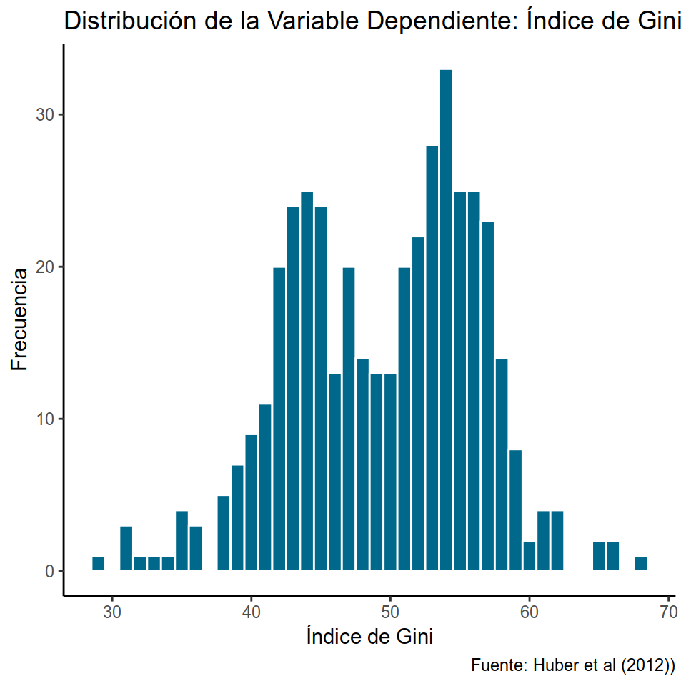
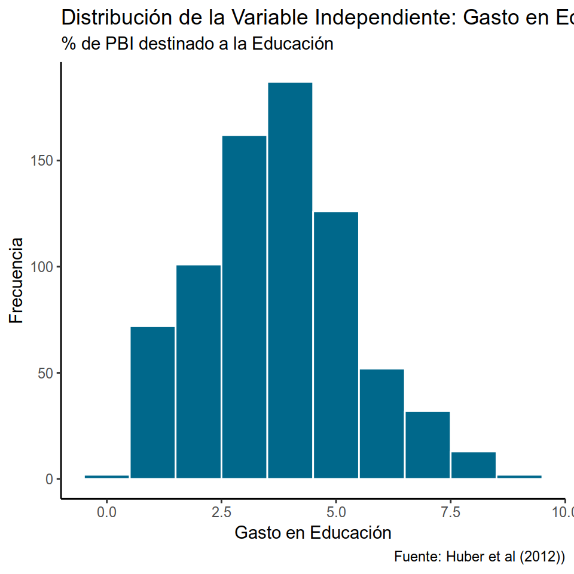
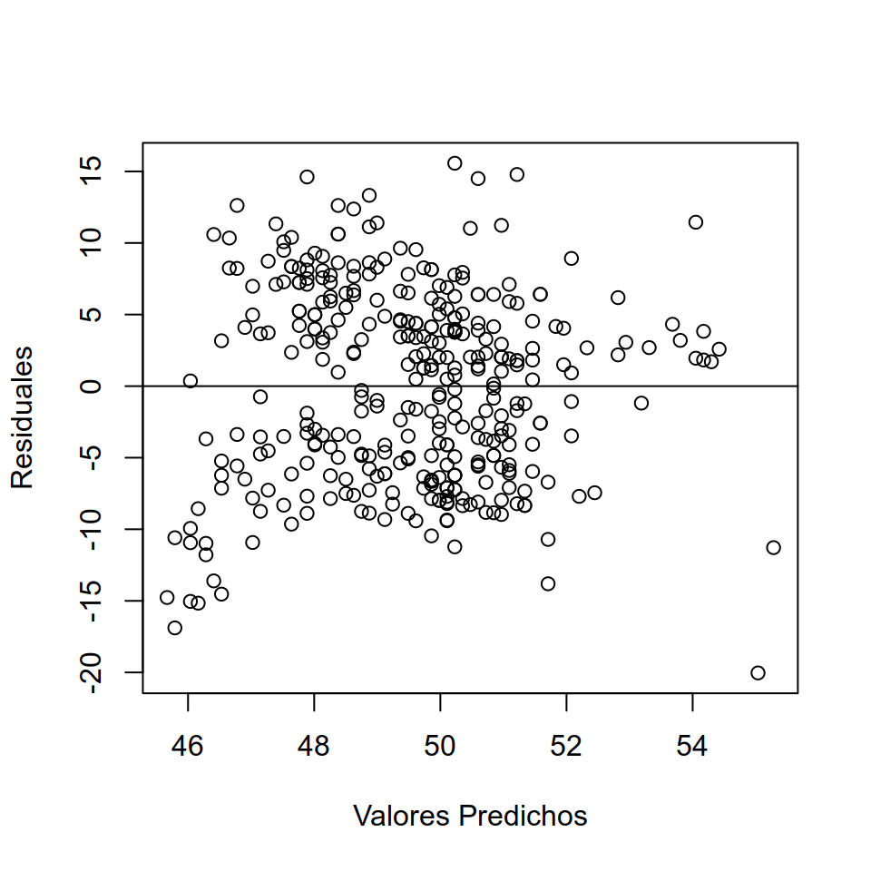
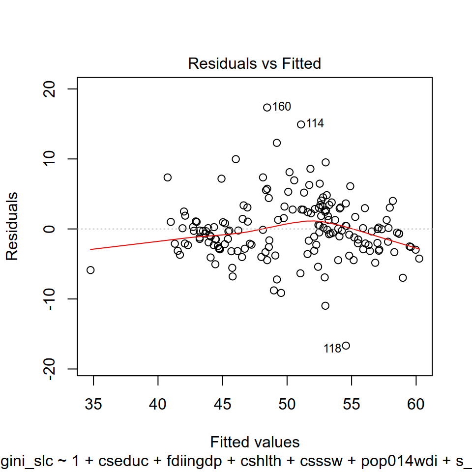
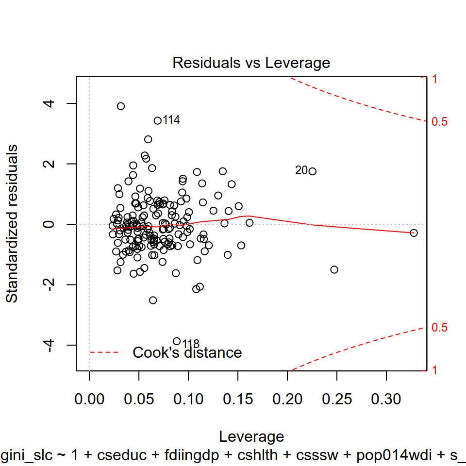
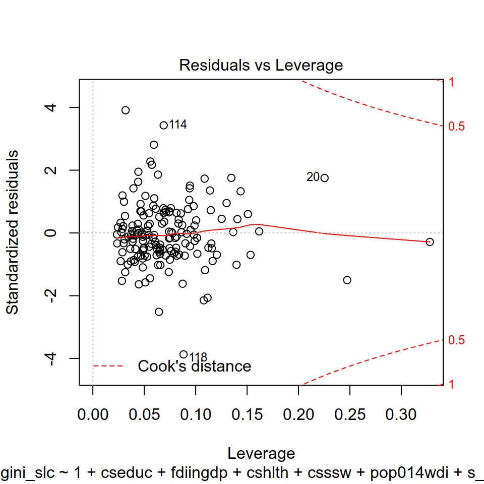
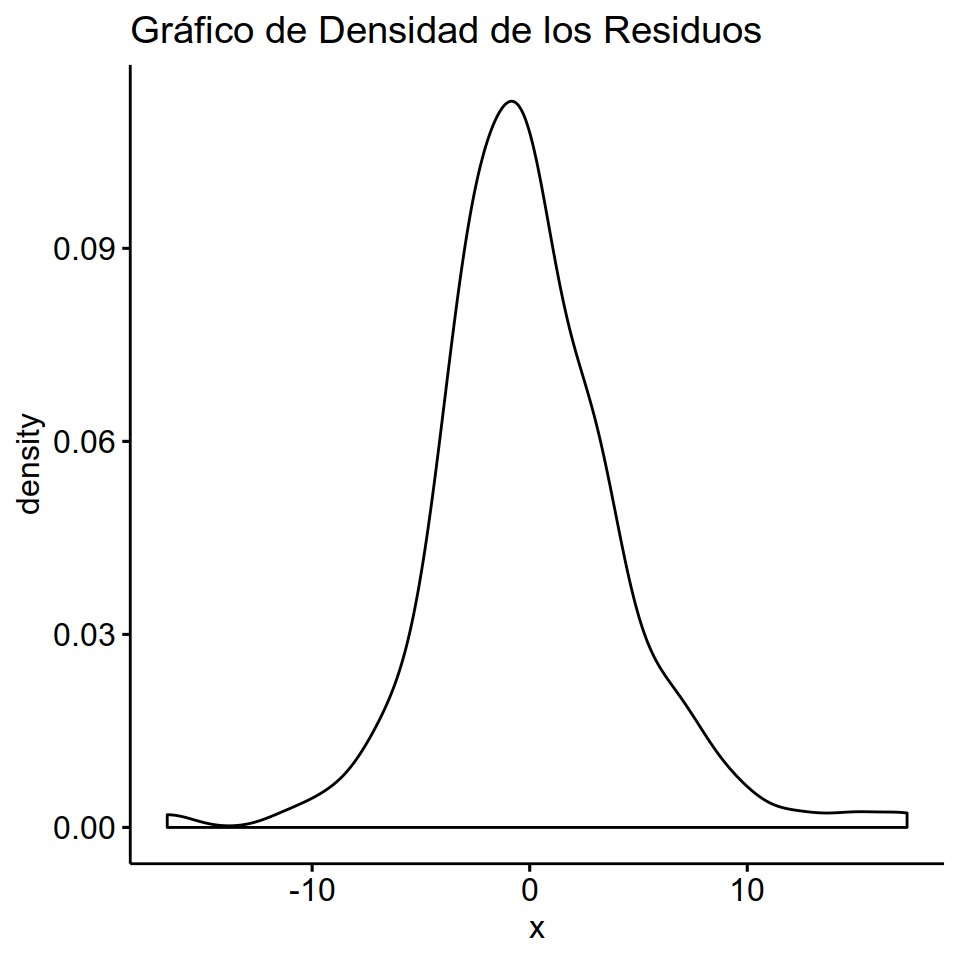
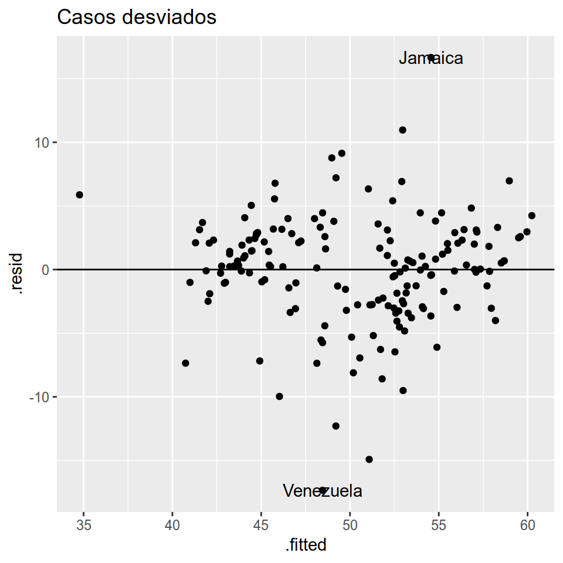
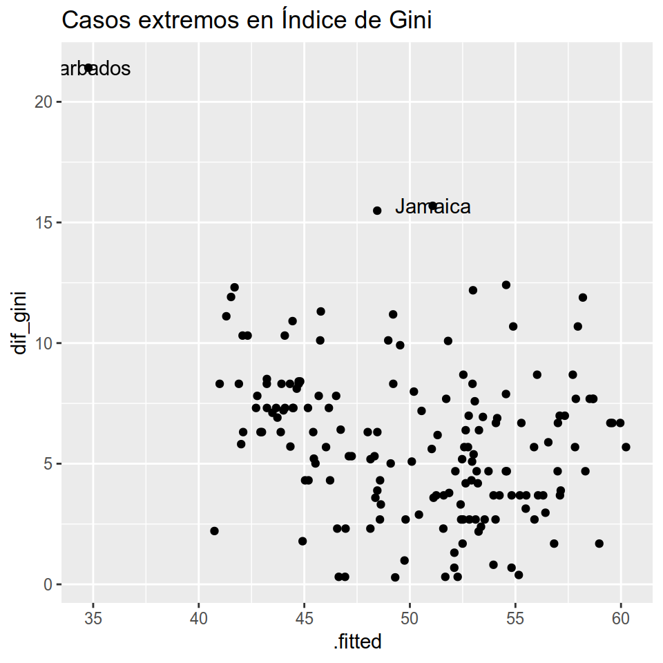

Capítulo 8 Modelos lineales
Por Inés Fynn y Lihuen Nocetto
8.1 Introducción
PENDIENTE.
8.2 Aplicación en R
La base de datos con la que trabajaremos en este capítulo se nutre de dos bases de datos construidas por Evelyne Huber y John D. Stephens (http://huberandstephens.web.unc.edu/common-works/data/). Estas dos bases de datos son:
Latin America Welfare Dataset, 1960-2014 (Evelyne Huber and John D. Stephens, Latin American Welfare Dataset, 1960-2014, University of North Carolina at Chapel Hill, 2014.): contiene variables sobre Estados de Bienestar en todos los países de América Latina y el Caribe entre los años 1960 y 2014.
Latin America and Caribbean Political Data Set, 1945-2012 (Evelyne Huber and John D. Stephens, Latin America and the Caribbean Political Dataset, 1945-2012, University of North Carolina at Chapel Hill, 2012.): contiene variables políticas para todos los países de América Latina y el Caribe entre los años 1945 y 2012.
La base de datos resultante contiene 1074 observaciones de 25 países entre los años 1970 y 2012 (se dejaron por fuera los datos de la década del 60 por tener demasiados valores perdidos).
Primero cargamos el paquete tidyverse que incluye un conjunto amplio de funciones para el manejo de bases de datos
Vamos a importar esta base de datos:
Como base para el análisis en este capítuo tomaremos el paper de Huber et al (2006) donde se estiman los determinantes de la desigualdad en los países de América Latina y el Caribe. Trabajar sobre la base de este artículo nos permite estimar un modelo con varias variables de control que ya se ha probado son importantes para explicar la variación de la desigualdad en la región.
Por tanto, la variable dependiente que nos interesa explicar es la desigualdad de ingresos en países de América Latina y el Caribe, operacionalizada a partir del Índice de Gini (gini_slc).
Las variables independientes que incorporaremos al modelo son las siguientes:
- Dualismosectorial (refiere a la la coexistencia de un sector tradicional de baja productividad y un sector moderno de alta productividad) - s_dualism
- PBI - rgdpch
- Inversión Extranjera Directa (ingresos netos - % del PIB) - fdiingdp
- Diversidad étnica (variable dummy codificada 1 cuando al menos el 20 %, pero no más del 80 % de la población es étnicamente diversa) - ethnicdicot
- Democracia (tipo de régimen) - demrss
- Gasto en educación (como porcentaje del PBI) - cseduc
- Gasto en salud (comoporcentaje del PBI) - cshlth
- Gasto en seguridad social - csssw
- Balance legislativo - legbal
- AutoritarismoRepresivo - repressauthor
Durante este capítulo intentaremos estimar cuál es el efecto del gasto en educación sobre la desigualdad en los países de América Latina y el Caribe. De este modo, nuestra variable independiente de interés será Gasto en Educación (cseduc).
8.2.1 Estadísticos Descriptivos
Antes de estimar un modelo con Mínimos Cuadrados Ordinarios (MCO, o OLS por su sigla en inglés), o con cualquier estimador, es recomendable reconocer la distribución de las variables de interés: la variable dependiente \(y\) (variable explicada, el regresando) y la variable independiente de interés \(x\) (variable explicativa, regresor).
Por lo general, en nuestros modelos tendremos, además de la variable independiente de interés, otras variables independientes (o explicativas) que les llamaremos “controles” pues su función será hacer el escenario ceteris paribus lo más creíble posible. Es decir, “mantener el resto de los factores constantes” para acercarnos lo más posible a un mundo experimental, en el que podemos controlar todas las variables que afectan \(y\) y observar cómo la variación en una sola variable independiente \(x\) afecta la variación de la variable dependiente (\(y\)).
Entonces, antes de estimar el modelo, vamos a observar los estadísticos descriptivos de las variables que estarán incorporadas a dicho modelo (tanto de la dependiente como de las independientes). El objetivo es prestar atención a los siguientes puntos:
Variación en \(x\): que las variables independientes (pero sobre todo la de interés) tengan variación en nuestra muestra. Pues si no hay variación de \(x\), no podremos estimar cómo esta variación afecta la variación de \(y\).
Variación en \(y\): si la variable dependiente no varía, no vamos a poder explicar su variación en función de las \(x\).
Unidad de medición de las variables: es en esta instancia donde evaluamos cómo están medidas nuestras variables (además de revisar los diccionarios que por lo general acompañan las bases de datos con las que trabajamos), para poder entender qué tipo de variables estas debieran ser (nominales, ordinales, continuas), y además para luego poder interpretar correctamente los resultados obtenidos.
Tipos de variables: en la estimación por Mínimos Cuadrados Ordinarios las variables dependientes deben ser, generalmente, continuas (aunque es posible trabajar con variables dependientes dicotómicas). Por tanto, debemos asegurarnos que la variable dependiente sea continua y numérica. Además, es importante conocer el tipo de variables independientes y chequear que su tipo sea coherente con cómo está codificada (i.e si tenemos una variable independiente de “rangos de edad” la variable debe ser categórica o de factor, y no númerica), para que luego nuestras interpretaciones de los resultados sean correctas.
Identificar valores perdidos: Si nuestras variables tienen demasiados valores perdidos debemos revisar a qué se debe esto y, eventualmente, imputar datos (como se explica en el capítuo #XX ).
8.2.2 Estadísticos descriptivos y distribución de las variables del modelo
Una primera visualización de nuestras variables de interés la podemos hacer utilizando el comando skmir que nos otorga no solo algunos estadísticos descriptivos sino también la distribución de las variables.
skim(basehys %>% select(gini_slc, cseduc, fdiingdp, rgdpch, cseduc, cshlth, csssw, ethnicdicot, pop014wdi))%>% skimr::kable()
## Skim summary statistics
## n obs: 1074
## n variables: 8
##
## Variable type: numeric
##
## variable missing complete n mean sd p0 p25 p50 p75 p100 hist
## ------------- --------- ---------- ------ --------- --------- --------- --------- --------- --------- --------- ----------
## cseduc 325 749 1074 3.8 1.65 0.4 2.6 3.8 4.8 9.1 ▂▅▇▇▅▂▁▁
## cshlth 325 749 1074 2.5 1.89 0.1 1.1 2.1 3.4 15 ▇▆▃▁▁▁▁▁
## csssw 467 607 1074 4.1 3.57 0 1.5 3 5.7 16.8 ▇▆▃▂▁▁▁▁
## ethnicdicot 370 704 1074 0.45 0.5 0 0 0 1 1 ▇▁▁▁▁▁▁▇
## fdiingdp 198 876 1074 2.19 4.18 -55.24 0.48 1.43 3.29 39.81 ▁▁▁▁▇▂▁▁
## gini_slc 649 425 1074 49.54 6.73 28.9 44 50.6 55 68.3 ▁▁▅▆▆▇▁▁
## pop014wdi 129 945 1074 36.36 7.01 18.99 30.79 36.57 42.26 48.73 ▁▃▆▆▇▆▇▆
## rgdpch 194 880 1074 7345.94 4981.75 1421.71 4046.04 6264.85 8667.02 29343.9 ▇▇▃▁▁▁▁▁En el output se ordenan los resultados por tipo de variable, nos indica la cantidad de missing para cada una de ellas, su respectiva media, desvío estandar, los valores correspondientes a los percentiles y un pequeño histograma que nos muestra cómoestán distribuidas.
Además, si quisieramos, podriamos realizar una tabla seleccionando solo algunos de los estadísticos que te interesan. Aquí por ejemplo, solo nos interesa ver la media y desviación estándar:
skim(basehys %>% select(cseduc, fdiingdp, rgdpch, cseduc, cshlth, csssw, ethnicdicot, pop014wdi))%>% dplyr::filter(stat==c("mean","sd"))%>% skimr::kable()
## Warning in stat == c("mean", "sd"): longer object length is not a multiple
## of shorter object length| variable | type s | tat l | evel v | alue f | ormatted |
|---|---|---|---|---|---|
| fdiingdp | numeric | mean | .all | 2.19 | 2.19 |
| fdiingdp | numeric | sd | .all | 4.18 | 4.18 |
| cshlth | numeric | mean | .all | 2.50 | 2.5 |
| cshlth | numeric | sd | .all | 1.89 | 1.89 |
| ethnicdicot | numeric | mean | .all | 0.45 | 0.45 |
| ethnicdicot | numeric | sd | .all | 0.50 | 0.5 |
En este caso solo nos interesa observar su distribución en histogramas:
| variable | type | stat | level | value | formatted |
|---|---|---|---|---|---|
| cseduc | numeric | hist | .all | NA | ▂▅▇▇▅▂▁▁ |
| fdiingdp | numeric | hist | .all | NA | ▁▁▁▁▇▂▁▁ |
| rgdpch | numeric | hist | .all | NA | ▇▇▃▁▁▁▁▁ |
| cshlth | numeric | hist | .all | NA | ▇▆▃▁▁▁▁▁ |
| csssw | numeric | hist | .all | NA | ▇▆▃▂▁▁▁▁ |
8.2.3 Matriz de correlación de variables independientes
Luego de reconocer todas las variables que incorporaremos al modelo, es recomendable observar cómo están relacionadas entre ellas. Para esto, realizamos una matriz de correlación de las variables independientes con el comando rcorr del paquete Hmisc donde podemos evaluar la correlaicón de Pearson entre todas las variables. Además, este comando también nos da el p value para cada correlación, donde podemos evaluar si la correlación observada es significativa.
De todos modos, es importante recordar que la correlación no implica causación. Aquí simplemente queremos comprender si las variables del modelo están de algún modo relacionadas. Este paso es importante no solo para un reconocimiento de nuestros datos y variables, sino también porque queremos evitar que nuestro modelo tenga multicolinealidad perfecta (que hayan variables independientes que estén perfectamente corrrelacionadas) pues es uno de los supuestos centrales de OLS que revisaremos al final de este capítuo.
variables <- c("gini_slc","cseduc","s_dualism","fdiingdp","rgdpch","ethnicdicot","demrss","cshlth","csssw","legbal","repressauthor","pop014wdi")
vind <- basehys[variables]rcorr(as.matrix(vind))
## gini_slc cseduc s_dualism fdiingdp rgdpch ethnicdicot demrss
## cshlth csssw legbal repressauthor pop014wdi
## [ reached getOption("max.print") -- omitted 12 rows ]
##
## n
## gini_slc cseduc s_dualism fdiingdp rgdpch ethnicdicot demrss
## cshlth csssw legbal repressauthor pop014wdi
## [ reached getOption("max.print") -- omitted 12 rows ]
##
## P
## gini_slc cseduc s_dualism fdiingdp rgdpch ethnicdicot demrss
## cshlth csssw legbal repressauthor pop014wdi
## [ reached getOption("max.print") -- omitted 12 rows ]Ahora que conocemos todas las variables que incorporaremos al modelo, y cómo se relacionan entre sí, profundizaremos sobre las variables de interés: la dependiente y la independiente.
8.2.4 Distribución de las variables de interés
Como mencionamos anteriormente, siempre nos interesa estimar cómo el cambio en una variable independiente (su variación) afecta la variación de una variable dependiente. Es decir, cómo cambia \(y\) cuando cambia \(x\).
En este caso, supongamos que nos interesa estimar cómo varían los niveles de desigualdad de un país (medido a partir del Índice de Gini) en relación al gasto en la educación (medido como porcentaje del PBI destinado a la educación). De este modo, nuestra variable independiente de interés es el gasto en la educación, mientras que la variable dependiente es la desigualdad.
Veamos cómose distribuyen estas variables en nuestra base de datos:
La variable dependiente: Índice de Gini
ggplot(basehys, aes(x=gini_slc, na.rm=TRUE))+
geom_histogram(binwidth = 1,color="white", fill="deepskyblue4") +
labs(title = paste(
"Distribución de la Variable Dependiente: Índice de Gini"),
caption = paste ("Fuente: Huber et al (2012))"
),
x = "Índice de Gini",
y = "Frecuencia"
)+
theme_classic()
## Warning: Removed 649 rows containing non-finite values (stat_bin).
La variable independiente: Gasto en Educación (% de PBI)
ggplot(basehys, aes(x=cseduc, na.rm=TRUE))+
geom_histogram(binwidth = 1,color="white", fill="deepskyblue4") +
labs(title = paste(
"Distribución de la Variable Independiente: Gasto en Educación"),subtitle = paste("% de PBI destinado a la Educación"),
caption = paste ("Fuente: Huber et al (2012))"
),
x = "Gasto en Educación",
y = "Frecuencia"
)+
theme_classic()
## Warning: Removed 325 rows containing non-finite values (stat_bin).
8.2.5 Relación entre la variable dependiente e independiente
Luego de observar cómo distribuyen las variables de interés, podemos ver gráficamente cómo se relacionan. Es decir, graficamos la correlación entre estas dos variables: en el eje de \(x\) (horizontal) ubicamos a la variable independiente, mientras que en el eje de \(y\) (vertical) la variable dependiente. Como resultado, cada “punto” del gráfico representa una observación de nuestra muestra con un determinado valor de gasto en educación (\(x\)) y un determinado valor en el índice de Gini (\(y\)).
ggplot(basehys, aes(cseduc, gini_slc)) + geom_point()+
labs(title="Relación entre Gasto en Educación e Índice de Gini", x="Gasto en Educación (%de PBI)", y="Gini", caption = paste ("Fuente: Huber and Stephens, 2012"))
## Warning: Removed 718 rows containing missing values (geom_point).
Esta es una primera visualización de la relación entre nuestras variables que nos permite observar si hay algún tipo de vínculo entre ellas. Aquí claramente se observa una relación positiva (a mayor gasto en educación, mayor gini). De todos modos, hasta el momento no podemos decir nada concluyente sobre la relación entre gasto en educación y nivel de desigualdad, para esto es necesario estimar el modelo. Hasta ahora solo estuvimos conociendo nuestros datos.
8.3 Modelo bivariado: regresión lineal simple
El modelo lineal simple asume que una variable aleatoria de respuesta \(y\) es una función lineal de una variable independiente \(x\) más un término de error \(u\). También decimos que la variable dependiente \(y\) es resultado de un Proceso de Generación del Dato (DGP por sus siglas en inglés) que puede escribirse \[ Y = \beta_0 + \beta_1x + u (1)\]
Entonces, el modelo lineal implica precisamente definir que \(Y\) está generada por una función lineal de \(x_1\), además de un término constante \(\beta_0\) y la variable \(u\) que es inobservada. Dos supuestos son necesarios para derivar los estimadores de Mínimos Cuadrados Ordinarios. El primero refiere a que la esperanza de \(u\) es igual a 0 \[E(u)=0\]. Esto implica que a nivel poblacional, todos los factores inobservados promedian cero. El supuesto más importante refiere a que la media de \(u\) para cada valor de \(x\) es cero: \[E(u|x)=0\]
Este supuesto se conoce en la literatura econométrica comomedia condicional cero, o independencia condicional. En la literatura experimentalista se conoce comoexogeneidad de la \(x\) o también que \(x\) y \(u\) son ortogonales. Todos estos términos implican que se asume que para cada valor de la variable independiente de interés \(x\) los factores inobservados promediarán cero. En otras palabras, conocer un valor determinado de la \(x\) no nos dice nada acerca de los inobservados. Cuando \(E(u|x) = 0\), entonces se cumple que \[cov(x,u) = 0\].
En definitiva, bajo el supuesto de independencia condicional, \(x\) y \(u\) no correlacionan y esto permite derivar los estimadores de Mínimos Cuadrados Ordinarios a través de las condiciones de primer orden. Las dos condiciones de primer orden son que \[E(u)=0\] y \[E(u|x)=0\]
Entender que estas son las condiciones que permiten derivar el estimador de MCO es clave para entender porqué a partir de la estimación por MCO no podemos testear la independencia del error. Esto es, por construcción, los residuos (\(\hat{u}\)) de la regresión siempre promediarán cero en la muestra y en cada valor de \(x\). Demandar exogeneidad implica poder argumentar que \(u\) es efectivamente ortogonal a las \(x's\), algo más creíble para experimentos y cuasi experimentos (ver Gerber y Green 2012, Dunning 2012, Glennester y Takavarsha 2013).
Si damos por válido que \(E(u|x)= 0\),entonces por álgebra podemos escribir la esperanza de una variable Y dado X como
\[E(y|x)= \beta_0+ \beta_1x\]
Como se ve, el término inobservado \(u\) desaparece de la ecuación cuando se considera la esperanza de la distribución de \(Y\) (la esperanza de \(u\) es cero). Al término constante \(\beta_0\) y al efecto de la \(x_1\) se lo conoce como “parte sistemática del modelo”", o también Función de Regresión Poblacional (FRP). Es clave entender que el supuesto de \(E(u)=0\) refiere al promedio de los factores inobservables y que por tanto, en promedio \(u\) no afecta a \(Y\). Sin embargo, debe recordarse que cada realización de la variable aleatoria Y está generada por la ecuación 1, y que por tanto, la variable Y de un individuo aleatoriamente seleccionado de esa población es \[Y_i= \beta_0+\beta_1x_{1i}+u_i\]
Esto quiere decir que la realización de la variable aleatoria \(Y\) para el individuo \(i\) es una función de \(x_1\) y \(u\). O sea, del valor que toma la \(x_1\) en ese individuo y el valor que toma \(u\). Todos los factores inobservados que se anotan como\(u\) son los que explican que cada individuo se aleje de la FRP.
8.3.1 Estimando un modelo lineal en R
Una vez que hemos definido un modelo poblacional como el descrito por la ecuación (1), nuestro trabajo es estimar el impacto de la variable independiente sobre la dependiente. La función lm que se encuentra en R base es la principal herramienta para estimar modelos lineales. La forma general que toma la función es
De donde se entiende que se estima un linear model (lm) para una variable dependiente Y regresada (~) en una variable independiente X. El “1” no es necesario, pero por estilo, se agrega para denotar el intercepto (\(\beta_0\)).
Con base a la investigación de Huber y Stephens (2006) asumamos que la Desigualdad es una función lineal del Gasto en Educación más un término de error inobservado \(u\) y una constante \(\beta_0\). Formalmente:
\[ Desigualdad = \beta_0 + \beta_1 GastoEducación + u \]
Por el momento, vamos a asumir que la base de datos tiene 1074 observaciones independientes. En realidad, la estructura es de datos de panel: el mismopaís tiene distintas observaciones a lo largo del tiempo. Sin embargo, por el momento no estamos en condiciones de abordar correctamente estos datos. El supuesto de observaciones independientes e idénticamente distribuidas es lo que permite escribir la realización del modelo para un individuo \(i\) aleatoriamente seleccionado como\[Desigualdad_i= \beta_0 + \beta_1GastoEducación_i + u_i\]
Para estimar el modelo, utilizaremos los datos de la base de Huber y Stephens (2006). La variable dependiente Desigualdad está medida a través del índice de gini y el nombre de la variable es “gini_slc”. La variable independiente Gasto en Educación es “cseduc”. Comolos datos están alojados en un data.frame, a la función le tenemos que indicar que traiga esos datos de la base correspondiente. Eso es lo que ocurre luego de la coma
modelo_1 <- lm(gini_slc~1 + cseduc , data=basehys) #luego de la coma le indicamos el data.frame que contiene los datos.
class(modelo_1) # verificamos que la clase del objeto es "lm"
## [1] "lm"En la primera línea de código se creó un objeto (modelo_1) en que se está guardando el resultado de la función lm. Esta función arroja objetos de clase “lm” que son vectores que incluyen los coeficientes estimados, los errores estándar, residuos, la bondad de ajuste, entre otros resultados de la estimación. Para ver los componentes del objeto, una forma rápida es utilizar la función summary
summary( modelo_1)
##
## Call:
## lm(formula = gini_slc ~ 1 + cseduc, data = basehys)
##
## Residuals:
## Min 1Q Median 3Q Max
## -20.04 -5.62 1.09 4.99 15.57
##
## Coefficients:
## Estimate Std. Error t value Pr(>|t|)
## (Intercept) 44.80 1.02 43.80 < 2e-16 ***
## [ reached getOption("max.print") -- omitted 1 row ]
## ---
## Signif. codes: 0 '***' 0.001 '**' 0.01 '*' 0.05 '.' 0.1 ' ' 1
##
## Residual standard error: 6.7 on 354 degrees of freedom
## (718 observations deleted due to missingness)
## Multiple R-squared: 0.0642, Adjusted R-squared: 0.0615
## F-statistic: 24.3 on 1 and 354 DF, p-value: 1.29e-06Presentaciones más elegantes pueden obtenerse con mtable del paquete memisc, o con las funciones stargazer y texreg (los paquetes tienen el mismonombre que la función respectiva)
Veamos la presentación de resultados con la función mtable
mtable(modelo_1)
##
## Calls:
## modelo_1: lm(formula = gini_slc ~ 1 + cseduc, data = basehys)
##
## ===============================
## (Intercept) 44.81***
## (1.02)
## cseduc 1.23***
## (0.25)
## -------------------------------
## R-squared 0.06
## adj. R-squared 0.06
## sigma 6.70
## F 24.27
## p 0.00
## Log-likelihood -1181.47
## Deviance 15907.25
## AIC 2368.94
## BIC 2380.57
## N 356
## ===============================Como se ve, resulta más cómodo ver los resultados con mtable que con summary. Allí se ve claramente que la variable “cseduc”, Gasto en Educación, tiene un efecto positivo, de magnitud 1.233, estadísticamente significativo.En concreto, cuando el Gasto en Educación como porcentaje del PIB aumenta en una unidad, la desigualdad aumenta en un 1,23%. Esto es así ya que nuestra variable dependiente está medida del 1 al 100 al igual que la independiente. El efecto del Gasto en Educación es significativo al 99.9% de confianza. Sabemos eso porque al lado del coeficiente aparecen tres estrellas, que refieren a un nivel de significancia de 0,01 %.
La significancia estadística es resultado de la prueba t. Esta nos indica la distancia estandarizada donde se encuentra el beta estimado en la distribución del estimador bajo la hipótesis nula de que \(\beta_1=0\). El estimador tiene una distribución t-Student con grados de libertad igual a \(n-k-1\) donde \(k\) es el número de variables independientes y se le suma 1 por la estimación de la constante \(\beta_0\).
Una aproximación manual de la distancia del beta estimado en la distribución del estimador bajo la hipótesis nula \(\beta_1=0\), la obtenemos cuando dividimos la estimación por su error estándar:
Este valor es el mismo que arroja la tercera columna de la sección “Coefficients” del summary del modelo_1. El valor t se interpreta como la distancia de la estimación de \(\hat\beta_1\) de la media de una distribución del estimador bajo \(H_0=\beta_1=0\). En este caso, el valor 1.233 está a 4.93 desvíos estándar de la distribución del estimador cuando H0 es verdadera (la media de la distribución es 0).
Como las distribuciones t colapsan sobre la normal a medida que aumentan los grados de libertad, y sabemos que aproximadamente hasta 2 desvíos estándar se encuentra el 95% de la probabilidad de una normal, entonces cuando el estadístico t supera el valor de 2 podemos saber que la probabilidad de observar nuestra estimación si H0 fuera cierta es menor a 0.05. Cuando esto sucede, rechazamos la hipótesis nula a un nivel de confianza del 95%.
En este caso, el \(\hat\beta_1\) estimado está a más de 4.93 desvíos estándar de la media de la distribución bajo \(H_0=\beta_1=0\) por lo que es muy poco probable haber observado un efecto de 1.23 si \(H_0\) es verdadera. La probabilidad precisa puede observarse en la cuarta columna del summarydel modelo, que puede solicitarse a R con el siguente comando.
La probabilidad de observar una estimación de 1.23 si H0 es verdadera es de 0,00000128. Por tanto, podemos rechazar H0 aún a un nivel de confianza de 99.9%
Si el investigador quisiera hacer todas estas operaciones manualmente para diversas variables de un modelo múltiple podría guardar los coeficientes estimados en un vector:
Luego guardar los errores estándar,
Para luego operar con esos vectores.
Antes de continuar con el análisis , mostraremos dos paquetes útiles para presentar resultados de regresiones lineales. Tanto stargazercomotexregestán diseñados para imprimir tablas de una manera elegante junto al cuerpo del texto que se desea publicar.
8.3.2 Representación gráfica.
Como vimos anteriormente, una de las maneras más fáciles de mostrar la relación entre dos variables es a través de gráficos. El paquete ggplot2es una herramienta de suma utilidad para realizar diverso tipo de representaciones. En el primer código se grafican todas las observaciones en función de sus valores de variable independiente y dependiente.
ggplot(data = basehys, #se especifica el origen de la base de datos
aes(x = cseduc, y = gini_slc))+ #se seleccionan las variables independiente y dependiente
geom_point() + #se plotean los valores observados
geom_smooth(method = "lm", # se superpone la línea de regresión
se = FALSE, #no se plotea el área de error al 95% de confianza
color = "blue")+ #color de línea
labs (x = "Gasto Educación") + # título del eje X
labs( y= "Desigualdad") + #título del eje Y
labs ( title ="Relación lineal entre Gasto Educación y Desigualdad") #título del gráfico
## Warning: Removed 718 rows containing non-finite values (stat_smooth).
## Warning: Removed 718 rows containing missing values (geom_point).
Usualmente es útil mostrar también una representación gráfica del error de la predicción de la recta. ggplot2nos permite editar un área sombreada donde podrían haber estado los valores predichos con un determinado nivel de significancia. Si bien el 95% de confianza es el valor que viene por defecto, también podemos editar este valor.
El primer bloque muestra la línea de regresión y su error para un nivel de significancia estadística del 95%.
ggplot(data = basehys, #se especifica el origen de la base de datos
aes(x = cseduc, y = gini_slc))+
geom_point() +
geom_smooth(method = "lm",
se = T, #se agrega error de predicción
color = "blue")+
labs (x = "Gasto Educación") +
labs( y= "Desigualdad") +
labs ( title ="Relación lineal entre Gasto Educación y Desigualdad")
## Warning: Removed 718 rows containing non-finite values (stat_smooth).
## Warning: Removed 718 rows containing missing values (geom_point).
En este bloque de código se ha cambiado el nivel de significancia estadística al 99,9%
ggplot(data = basehys, #se especifica el origen de la base de datos
aes(x = cseduc, y = gini_slc))+
geom_point() +
geom_smooth(method = "lm",
se = T, #se agrega error de predicción
color = "blue",
level = 0.999)+ # se modifica la incertidumbre de la predicción
labs (x = "Gasto Educación") +
labs( y= "Desigualdad") +
labs ( title ="Relación lineal entre Gasto Educación y Desigualdad")
## Warning: Removed 718 rows containing non-finite values (stat_smooth).
## Warning: Removed 718 rows containing missing values (geom_point).
8.4 Modelo multivariado: regresión múltiple
Si bien suele interesar el efecto de una variable independiente sobre una dependiente, lo más común es estimar modelos en los que la \(Y\) es resultado tanto de una variable independiente de interés como de un conjunto de variables de control. Formalmente,
\[Y= \beta_0+\beta_1x_{1}+\beta_1x_{2}+...+\beta_jx_{j}+u\]
A diferencia de la regresión simple, ahora la variable aleatoria \(Y\) es una función de diversas variables más un término de error \(u\). Al igual que la regresión simple, la esperanza del error condicional en los valores de las \(x_j\) debe ser igual a cero. Formalmente, \(E(u|x_1, x_2, ..., x_j)=0\). Para estimar insesgadamente un modelo lineal múltiple no sólo se necesita el supuesto de media condicional cero, pero se presentarán todos los supuestos en una sección posterior.
Por el momento estimaremos un modelo poblacional en que la desigualdad social (gini_slc) es una función lineal del gasto en educación como porcentaje del PIB (cseduc), de la inversión extranjera directa (fdiingdp), del gasto en salud como porcentaje del PIB (cshlth), del gasto en Seguridad Social como porcentaje del PIB (csssw), de la población joven (pop014wdi), del dualismo estructural de la economía (s_dualism), de la división étnica (ethnicdicot), del PIB per cápita real (rgdpch), del tipo de régimen (demrss), del balance entre los poderes del Estado (legbal) y del autoritarismo (repressauthor).
Como se ve, se han incluido una multiplicidad de variables que se piensa que predicen la desigualdad (Huber et al, 2006). El análisis de regresión múltiple nos permitirá estimar hasta qué punto nuestro modelo es correcto.
En primer término se debe correr la estimación de MCO. La función lmtambién estima modelos múltiples y la única diferencia es que deben sumarse las variables independientes.
Antes de estimar el modelo, filtraremos la base de datos, eliminando todos los casos con valores perdidos (NA`s) en nuestras variables de control. Hay mejores formas de lidiar con los valores perdidos, para esto puedes revisar el capítulo #XX sobre Imputación de Valores Perdidos. Aquí, por practicidad, simplemente nos quedaremos con aquellos casos (país/año) que están completos para las variables de nuestro modelo:
Ahora si estamos en condiciones de estimar el modelo 2:
Al igual que el modelo simple, podemos visualizar e imprimir los resultados de la estimación con summary , mtable, stargazero texreg.
mtable(modelo_2)
##
## Calls:
## modelo_2: lm(formula = gini_slc ~ 1 + cseduc + fdiingdp + cshlth + csssw +
## pop014wdi + s_dualism + ethnicdicot + rgdpch + demrss + legbal +
## repressauthor, data = basehys_sinna)
##
## ==============================
## (Intercept) 89.27***
## (7.75)
## cseduc 1.56***
## (0.44)
## fdiingdp 0.24
## (0.18)
## cshlth -0.83**
## (0.26)
## csssw -0.83***
## (0.20)
## pop014wdi -0.93***
## (0.17)
## s_dualism -0.17***
## (0.03)
## ethnicdicot 3.72***
## (1.03)
## rgdpch -0.00**
## (0.00)
## demrss -2.07*
## (0.89)
## legbal -10.52***
## (2.17)
## repressauthor -1.34
## (1.96)
## ------------------------------
## R-squared 0.59
## adj. R-squared 0.56
## sigma 4.51
## F 20.40
## p 0.00
## Log-likelihood -482.22
## Deviance 3150.06
## AIC 990.43
## BIC 1030.97
## N 167
## ==============================Estas funciones también nos permiten comparar dos o más modelos. Al momento de presentar una investigación suele ser recomendable mostrar cómo cambian (o no) los resultados ante distintas especificaciones. En el caso que se trabaja aquí la comparación de modelos es
mtable( modelo_1, modelo_2)
##
## Calls:
## modelo_1: lm(formula = gini_slc ~ 1 + cseduc, data = basehys)
## modelo_2: lm(formula = gini_slc ~ 1 + cseduc + fdiingdp + cshlth + csssw +
## pop014wdi + s_dualism + ethnicdicot + rgdpch + demrss + legbal +
## repressauthor, data = basehys_sinna)
##
## ===========================================
## modelo_1 modelo_2
## -------------------------------------------
## (Intercept) 44.81*** 89.27***
## (1.02) (7.75)
## cseduc 1.23*** 1.56***
## (0.25) (0.44)
## fdiingdp 0.24
## (0.18)
## cshlth -0.83**
## (0.26)
## csssw -0.83***
## (0.20)
## pop014wdi -0.93***
## (0.17)
## s_dualism -0.17***
## (0.03)
## ethnicdicot 3.72***
## (1.03)
## rgdpch -0.00**
## (0.00)
## demrss -2.07*
## (0.89)
## legbal -10.52***
## (2.17)
## repressauthor -1.34
## (1.96)
## -------------------------------------------
## R-squared 0.06 0.59
## adj. R-squared 0.06 0.56
## sigma 6.70 4.51
## F 24.27 20.40
## p 0.00 0.00
## Log-likelihood -1181.47 -482.22
## Deviance 15907.25 3150.06
## AIC 2368.94 990.43
## BIC 2380.57 1030.97
## N 356 167
## ===========================================Como se observa, la estimación puntual del efecto del Gasto en Educación cambió ligeramente. Mientras en el modelo simple el efecto es de 1,23 en el modelo múltiple este efecto pasa a 1,56. En este caso, la interpretación es que cuando el gasto en educación aumenta en una unidad, la desigualdad aumenta en promedio 1,56 puntos porcentuales manteniendo todos los demás factores constantes. Esto es, una vez que se descuenta el efecto de las variables de control.
Al igual que en el modelo 1, la variable sigue siendo significativa al 99,9% de confianza por lo que decimos que el efecto del Gasto en Educación es robusto a diferentes especificaciones. Cuando los investigadores incluyen nuevos controles al modelo y la principal variable de interés se mantiene significativa y con magnitudes relativamente estables se gana evidencia a favor del efecto de la misma. En otras palabras, cada vez es menos probable que el efecto observado en primera instancia fuese espurio.
Otra de las contribuciones del modelo 2 es la incorporación de variables nominales. Las variables dicotómicas y las categóricas plantean un ligero desafío de interpretación. Obsérvese la variable Diversidad Étnica que es dicotómica donde el valor 1 implica que más del 20% de la población pertenece a una minoría étnica y 0 si no hay una minoría tan relevante. El coeficiente de “ethicdicot” es 3,7 significativo al 99,9%. ¿Cómo interpretarlo? Sencillamente, el valor predicho de la desigualdad es 3.7 puntos mayor cuando existe una minoría étnica, a cualquier valor de las otras \(x's\). Para interpretar estos coeficientes siempre debe conocerse la categoría base. Como ethicdicot es igual a 0 cuando no hay minorías étnicas, el coeficiente se interpreta como el pasaje hacia tener minoría étnica.
En el caso de la variable s_dualism, dado que la categoría base es 0 para “sin dualismo”, el coeficiente se interpreta tal que tener una economía dual disminuye (coeficiente negativo) la desigualdad en aproximadamente 0.17 puntos.
Se puede observar gráficamente la incidencia de las variables dicotómicas utilizando plot_model del paquete sjPlot
library(sjPlot)
## Warning in checkMatrixPackageVersion(): Package version inconsistency detected.
## TMB was built with Matrix version 1.2.14
## Current Matrix version is 1.2.15
## Please re-install 'TMB' from source using install.packages('TMB', type = 'source') or ask CRAN for a binary version of 'TMB' matching CRAN's 'Matrix' packageEn la gráfica que sigue se muestra el efecto del gasto en educación sobre la desigualdad para las distintas categorías de Diversidad Étnica, manteniendo todas las demás variables constantes. Se aprecia claramente que lo único que cambia entre las categorías es el intercepto. Los países que tienen una minoría étnica importante tienen aproximadamente 3,7 puntos más de desigualdad que los que no tienen minorías étnicas, a cualquier valor de gasto en educación, manteniendo todas las demás variables constantes.
plot_model(model = modelo_2,
type = "pred",
terms = c("cseduc", "ethnicdicot"),
facet.grid = F,
show.ci = T,
title = "Valores predichos de Desigualdad según Gasto en Educación y Minoría Étnica (dicotómica")
8.4.1 Ajuste del modelo
La bondad de ajuste se define como la capacidad explicativa del modelo. Intuitivamente refiere a qué porción de la variación de la variable dependiente \(y\) es explicada por el modelo especificado. La medida de la bondad de ajuste es el \(R^2\) y se define como 1- SRC/STC, donde SRC es la Suma de los Residuos al Cuadrado y STC la Suma de los Totales Cuadrados. De manera simple SRC es una medida de todo lo que el modelo no explica, mientras que STC es la variabilidad de la \(y\). Un modelo que explique toda la variación de \(y\) tendrá un \(R^2\) de 1. Un modelo que no explique nada de la variabilidad de la variable dependiente tendrá un valor de 0.
Por regla general, a medida que se aumenta el número de variables independientes el \(R^2\) nunca disminuye por lo que se suele utilizar el \(R^2\) ajustado como una medida que penaliza la inclusión de variables sin fundamento. Como se puede observar en la comparación de los modelos estimados previamente, el modelo lineal simple tiene un \(R^2\) de 0.06. Eso puede leerse como que el modelo 1 explica el 6% de la variabilidad de la desigualdad. El modelo múltiple 2 aumenta su capacidad explicativa al 56%.
mtable(modelo_1, modelo_2)
##
## Calls:
## modelo_1: lm(formula = gini_slc ~ 1 + cseduc, data = basehys)
## modelo_2: lm(formula = gini_slc ~ 1 + cseduc + fdiingdp + cshlth + csssw +
## pop014wdi + s_dualism + ethnicdicot + rgdpch + demrss + legbal +
## repressauthor, data = basehys_sinna)
##
## ===========================================
## modelo_1 modelo_2
## -------------------------------------------
## (Intercept) 44.81*** 89.27***
## (1.02) (7.75)
## cseduc 1.23*** 1.56***
## (0.25) (0.44)
## fdiingdp 0.24
## (0.18)
## cshlth -0.83**
## (0.26)
## csssw -0.83***
## (0.20)
## pop014wdi -0.93***
## (0.17)
## s_dualism -0.17***
## (0.03)
## ethnicdicot 3.72***
## (1.03)
## rgdpch -0.00**
## (0.00)
## demrss -2.07*
## (0.89)
## legbal -10.52***
## (2.17)
## repressauthor -1.34
## (1.96)
## -------------------------------------------
## R-squared 0.06 0.59
## adj. R-squared 0.06 0.56
## sigma 6.70 4.51
## F 24.27 20.40
## p 0.00 0.00
## Log-likelihood -1181.47 -482.22
## Deviance 15907.25 3150.06
## AIC 2368.94 990.43
## BIC 2380.57 1030.97
## N 356 167
## ===========================================Algunos investigadores buscan aumentar la bondad de ajuste del modelo. Sin embargo, estimar el efecto de una variable en concreto no requiere aumentar la bondad de ajuste sino simplemente que se cumplan los supuestos del Modelo Lineal Clásico como la media condicional 0, la linealidad de los parámentros y demás supuestos que se describen en la sección correspondiente.
8.4.2 Inferencia en modelos lineales múltiples
Al igual que en la regresión lineal simple, los estimadores de cada uno de los parámentros \(\beta_j\) tienen una distribución t-Student por lo que puede realizarse inferencia acerca de las estimaciones puntuales de cada \(\hat{\beta_j}\) a través de una prueba t.
Sin embargo, a veces se desea imponer restricciones lineales múltiples al modelo del tipo \(H_0= \beta_1= \beta_2 = 0\). Aquí se está sosteniendo que el efecto de dos variables \(x_1\) y \(x_2\) es igual a cero. Un caso típico que requiere este tipo de hipótesis nula refiere a las variables categóricas que ingresan al modelo como variables dicotómicas ficticias. La variable dicotómica “educación media” y la dicotómica “educación superior” son en realidad categorías de una única variable nominal “nivel educativo” que sólo puede entrar en un análisis de regresión en la forma de dummies ficticias.
La prueba que permite hacer inferencia para restricción lineal múltiple es la prueba F. Esto implica que la \(H_0\) de una restricción múltiple distribuye F de Fisher.
Aquí se muestran dos maneras de testear una restricción lineal múltiple. La primera muestra cada uno de los pasos del test mientras que la segunda es más breve.
Supongamos que se quiere testear la hipótesis nula que $H_0= _1= _2 = _3 =0 $. Según esta hipótesis las variables \(x_1\), \(x_2\) y \(x_3\) no afectan a \(Y\) cuando se las considera en conjunto. La hipótesis alternativa es que al menos uno de los betas es distinto de 0. Si \(H_0\) es verdadera entonces un modelo que excluya estas variables debería explicar lo mismo que un modelo que las incluya, o sea, estas variables son redundantes. La manera de testear esta hipótesis es a través de un test F en el que se compara la suma de los residuos cuadrados del modelo completo y el modelo restringido. En términos simples, si las variables deben ser excluidas porque no explican la variabilidad de \(y\) la Suma de los Residuos Cuadrados de ambos modelos (otra manera es ver el \(R^2\)) no debe cambiar significativamente.
Se utiliza el hecho que la comparación de los residuos cuadrados distribuye F
\[F= \frac{(SRC_r-SRC_c)/q}{SRC_c/(n-k-1)}\]
Donde \(SRC_r\) es la Suma de los Residuos Cuadrados del modelo restringido, \(SRC_c\) es la Suma de los Residuos Cuadrados del modelo completo, \(q\) es la cantidad de variables excluidas y \(n-k-1\) son los grados de libertad del modelo completo.
En R se puede utilizar la función anova para comparar los modelos.
Por ejemplo, supongamos que un colega asegura que el balance del legislativo (legbal), el tipo de régimen (demrss) y la diversidad étnica (ethnicdicot) deben excluirse del modelo. Entonces debemos estimar un modelo restringido tal que
Como se ve, las variables mencionadas fueron excluidas de la sintaxis. Ahora se debe comparar el poder explicativo de cada modelo
anova( modelo_2, modelo_2_restringido)
## Analysis of Variance Table
##
## Model 1: gini_slc ~ 1 + cseduc + fdiingdp + cshlth + csssw + pop014wdi +
## s_dualism + ethnicdicot + rgdpch + demrss + legbal + repressauthor
## Model 2: gini_slc ~ 1 + cseduc + fdiingdp + cshlth + csssw + pop014wdi +
## s_dualism + rgdpch + repressauthor
## Res.Df RSS Df Sum of Sq F Pr(>F)
## 1 155 3150
## [ reached getOption("max.print") -- omitted 1 row ]
## ---
## Signif. codes: 0 '***' 0.001 '**' 0.01 '*' 0.05 '.' 0.1 ' ' 1La significancia de la última columna del test muestra con claridad que se rechaza la hipótesis nula por lo que esas variables no deben excluirse del modelo.
Otra manera de realizar un test de restricción múltiple es con la función linearHypothesis del paquete car
library(car)
## Loading required package: carData
##
## Attaching package: 'car'
## The following object is masked from 'package:memisc':
##
## recode
## The following object is masked from 'package:dplyr':
##
## recode
## The following object is masked from 'package:purrr':
##
## some
linearHypothesis(modelo_2, c("legbal=0", "demrss=0", "ethnicdicot=0"), test = "F",
cov. = vcovHC(modelo_2, method="arellano", type = "HC1"))
## Linear hypothesis test
##
## Hypothesis:
## legbal = 0
## demrss = 0
## ethnicdicot = 0
##
## Model 1: restricted model
## Model 2: gini_slc ~ 1 + cseduc + fdiingdp + cshlth + csssw + pop014wdi +
## s_dualism + ethnicdicot + rgdpch + demrss + legbal + repressauthor
##
## Res.Df RSS Df Sum of Sq F Pr(>F)
## 1 158 4728
## [ reached getOption("max.print") -- omitted 1 row ]
## ---
## Signif. codes: 0 '***' 0.001 '**' 0.01 '*' 0.05 '.' 0.1 ' ' 1Al igual que con el comando anova, se rechaza la hipótesis nula en que los coeficientes son iguales a cero y por tanto, se mantienen las variables en el modelo.
8.4.3 Supuestos de OLS
El estimador de Mínimos Cuadrados Ordinarios será de utilidad (estimará insesgadamente el parámetro poblacional) si es que se cumplen los supuestos de Gauss-Markov que permiten que sea el Mejor Estimador Lineal Insesgado (MELI o BLUE por sus siglas en inglés). Para profundizar sobre los supuestos es recomendable consultar: Wooldrige,2006;Stock y Watson, 2012; Monogan III, 2015.
Por tanto, es importante evaluar que en nuestra estimación se estén cumpliendo estos supuestos. Como veremos a continuación, esta evaluación es teórica y, en algunos casos, se podrá aproximar empíricamente.
8.4.3.1 1. Media condicional cero
El supuesto central para utilizar el estimador de MCO. El postulado crucial de este supuesto es la independencia entre las variables indpendientes y el término de error, esto nos permite aislar de los factores no observables (contenidos en el término de error \(u\)) el efecto de las \(x\). Este supuesto no puede ser evaluado empíricamente porque, por definición, no conocemos los factores contenidos en el término de error. Por lo tanto, la defensa de este supuesto siempre será teórica.
8.4.3.2 2. Muestreo aleatorio
Este es un supuesto sobre la generación de los datos. Se asume un muestreo aleatorio de tamaño \(n\) que implica que la muestra fue tomada de forma tal que todas las unidades poblacionales tuvieron la misma probabilidad de ser seleccionadas. Es decir, no hay un sesgo de selección muestral.
8.4.3.3 3. Linealidad en los Parámetros
MCO asume que la variable dependiente (\(y\)) esta relacionada linealmente con la variable(s) independiente(s) y el término de error (\(u\)). Es decir, el aumento en una unidad de \(x\) implica un efecto constante en la variable dependiente \(y\). De aquí la forma funcional de la ecuación de regresión:
\[Y = \beta_0 + \beta_1x + u\]
Si la relación en realidad no es lineal, entonces estaremos ante un problema de especificación del modelo. Es decir, los valores predichos por nuestro modelo no se ajustarán a la realidad de nuestros datos y, en consecuencia, las estimaciones serán sesgadas. Por tanto, es clave evaluar si la relación que queremos estimar es lineal o si la forma funcional que caracteriza dicha relación es otra (por ejemplo, podría ser cuadrática, cúbica, logarítmica, etc).
La buena noticia es que si tenemos motivos teóricos y empíricos para creer que la relación no es lineal, es posible realizar transformaciones a nuestras variables para lograr una mejor especificación del modelo. Un clásico ejemplo refiere a la relación parabólica entre la edad y el salario: a medida que aumenta la edad aumenta el salario hasta que llega un punto de inflexión donde el aumento de la edad se relaciona con menores niveles de ingreso. En este caso lo recomnedable es realizar una transformación cuadrática a la variable edad para lograr una mejor especificación del modelo.
Para evaluar la linealidad realizamos un gráfico de dispersión de los valores predichos contra los residuos \(u\). Lo que se intenta es evaluar si el promedio de los residuos tiende a ubicarse de manera aleatoria por encima y debajo del cero. Si los residuos muestran un patrón creciente o decreciente - o de cualquier otro tipo - entonces la forma funcional de alguna de las variables en cuestión no es lineal.
Para esto utilizamos el comando plot:
plot(y=modelo_1$residuals,x=modelo_1$fitted.values,
xlab="Valores Predichos",ylab="Residuales")
abline(0, 0)
Además, podemos hacer un gráfico de residuales parciales (o de componentes), donde se grafican cada una de las variables independientes del modelo contra los residuos. El objetivo es obtener un gráfico “parcial” para observar la relación entre la(s) variable(s) independiente(s) y la variable dependiente dando cuenta (controlando) de las demás variables del modelo. Una línea punteada nos muestra la predicción de OLS, y otra línea (rosada) nos muestra la relación “real”. Si observamos que alguna de nuestras variables no tiene una relación lineal podemos realizar transformaciones (a las variables!) para que la forma funcional se acerque a la empiria. Cabe destacar que, además de la justificación empírica, esta transformación lineal siempre debe ir acompañada de un argumento teórico de por qué la relación entre las dos variables toma esa forma.

La relación de nuestra variable de interés con la variable dependiente parece ser cuadrática creciente. Por tanto, podría ser razonable realizar una transformación cuadrática a la variable. Evaluemos esto gráficamente:
basehys_sinna$cseduc2 <- basehys_sinna$cseduc*basehys_sinna$cseduc
modelo_1_tl<- lm(gini_slc~1 + cseduc2 + cseduc, data=basehys_sinna)
library(car)
crPlots(modelo_1_tl)
A partir de un diagnostico visual, se observa una tendencia creciente en los residuos a medida que se avanza en los valores predichos. Además, se detectó una relación no lineal entre el gasto en educación y los niveles de desigualdad. La sospecha es que esta relación pueda ser cuadrática (parábola cuadrática creciente) y, de acuerdo al gráfico de residuales parciales parece ser que la variable transformada se acerca bastante más a la relación lineal que estima MCO (marcada por la línea punteada).
Para confirmar las observaciones visuales, se suele utilizar un test estadístico para diagnosticar una mala especificación funcional del modelo: RESET Test de Ramsey. La idea es justamente evaluar si es que existe un error de especificación de la ecuación de regresión. Este test lo que hace es volver a estimar el modelo pero incorporando los valores predichos del modelo original con alguna transformación no lineal de las variables. Luego, a partir de un Test-F se evalúa si el modelo con la especificación no lineal tiene un mejor ajuste que el modelo original sin la transformación no lineal. La hipótesis nula postula que las nuevas variables (en este caso cseduc^2) no aportan significativamente para explicar la variación de la variable dependiente; es decir, que su coeficiente es igual a cero (\(\beta=0\)).
library(lmtest)
## Loading required package: zoo
##
## Attaching package: 'zoo'
## The following objects are masked from 'package:base':
##
## as.Date, as.Date.numeric
resettest(modelo_1, power=2, type=c("fitted"), data=basehys_sinna)
##
## RESET test
##
## data: modelo_1
## RESET = 9, df1 = 1, df2 = 400, p-value = 0.004De acuerdo al resultado del Test F, confirmamos lo observado gráficamente: el incorporar un término cuadrático del gasto en educación mejora el ajuste de nuestra estimación. A esta conclusión llegamos observando el valor-p del test RESET de Ramsey: a un nivel de significancia estadística del 5%, se rechaza la hipótesis nula de que la incorporación del término cuadrático no mejora el ajuste del modelo.
- Nota: Esta evaluación se realizó para un modelo de regresión simple (bivariado). Pero bien puede realizarse exactamente lo mismo para modelos multivariados.
8.4.3.4 4. Variación en las variables independientes y no Colinealidad Perfecta
En primer lugar, es necesario que exista variación en la(s) variable(s) independiente(s). Si no tengo variación, la estimación de los coeficientes será indeterminada. Además, mayor variación en las variables independientes me permitirá realizar estimaciones más precisas.
Por otra parte, la no-colinealidad perfecta implica que las variables independientes no estén perfectamente correlacionadas linealmente. Es decir, si bien las variables independientes por lo general suelen tener alguna relación entre ellas, no queremos que midan prácticamente lo mismo! Eso lo evaluaremos con tests de multicolinealidad.
Problemas de la multicolinealidad:
A. Pérdida de eficiencia, pues sus errores estándar serán infinitos. Aún si la multicolinealidad es menos que perfecta los coeficientes de regresión poseen grandes errores estándar, lo que hace que no puedan ser estimados con gran precisión.
Repasemos la fórmula del error estándar de los coeficientes:
\[\hat{\sigma}{_\hat{\beta}{_1}} = \frac{\hat{\sigma}} {\sqrt{\sum(X_j – \bar{X})^2(1 - R^2_j)}}\]
\(\hat{\sigma}\) Es la varianza del término de error: \(\frac{\sum\hat{u}}{n-k-1}\)
\(\sum(X_j – \bar{X})^2\) Es la variabilidad de \(x_j\) (\(STCx_j\))
\(1 - R^2_j\) Es la porción de \(x_j\) que no es explicada por el resto de las x en el modelo (\(R^2_j\) indica la varianza de \(x_j\) que es explicada por el resto de las equis del modelo). Es por este término que la no colinealidad perfecta es tan importante!
B. Las estimaciones de los coeficientes pueden oscilar demasiado en función de qué otras variables independientes están en el modelo. En una estimación OLS la idea es que puedes cambiar el valor de una variable independiente y no de las otras (de esto se trata ceteris paribus). Sin embargo, cuando las variables independientes están correlacionadas, los cambios en una variable están asociados con los cambios en otra variable. Cuanto más fuerte es la correlación, más difícil es cambiar una variable sin cambiar otra. Se vuelve difícil para el modelo estimar la relación entre cada variable independiente y la variable dependiente manteniendo el resto constante porque las variables independientes tienden a cambiar simultáneamente.
Repasemos la fórmula del estimación del coeficiente en una regresión múltiple:
\[\hat{\beta_1} = \frac{\sum(\hat{r_{i1}}\hat{y_i})}{\sum(\hat{r^2_{i1}})}\]
Donde:
- \(\hat{r_{i1}}\) son los residuales de una regresión de \(x_1\) sobre el resto de las \(x\) en el modelo (osea la parte de \(x_1\) que no puede ser explicada - o que no está correlacionada - con el resto de las \(x\))
Por tanto, \(\hat{\beta_1}\) mide la relación muestral entre \(y\) y \(x_1\) luego de haber descontado los efectos parciales de \(x_2\), \(x_3\)…\(x_k\).
Para evaluar la multicolinealidad, un primer paso es observar la matriz de correlación de las variables de nuestro modelo (tal como hicimos en la etapa de analizar los estadísticos descriptivos):
variables <- c("gini_slc","cseduc","s_dualism","fdiingdp","rgdpch","pop014wdi","ethnicdicot","demrss","cshlth","csssw","legbal","repressauthor")
vind <- basehys[variables]
Hmisc::rcorr(as.matrix(vind))
## gini_slc cseduc s_dualism fdiingdp rgdpch pop014wdi
## ethnicdicot demrss cshlth csssw legbal repressauthor
## [ reached getOption("max.print") -- omitted 12 rows ]
##
## n
## gini_slc cseduc s_dualism fdiingdp rgdpch pop014wdi
## ethnicdicot demrss cshlth csssw legbal repressauthor
## [ reached getOption("max.print") -- omitted 12 rows ]
##
## P
## gini_slc cseduc s_dualism fdiingdp rgdpch pop014wdi
## ethnicdicot demrss cshlth csssw legbal repressauthor
## [ reached getOption("max.print") -- omitted 12 rows ]Vemos que algunas de nuestras variables están fuertemente correlacionadas!
De todos modos, para detecter multicolinealidad es necesario realizar un test de vif (variance inflation factors) porque ver correlación de a pares no nos ayuda a dilucidar si más de dos variables tienen una correlación lineal. Lo que nos dice este test vif es qué tanto se “agrandan” los errores de cada coeficiente en presencia de las demás variables (qué tanto se incrementa la varianza del error).
library(car)
vif(modelo_2)
## cseduc fdiingdp cshlth csssw pop014wdi s_dualism
## 1.8 1.5 1.7 4.8 5.0 1.2
## ethnicdicot rgdpch
## 1.9 2.4
## [ reached getOption("max.print") -- omitted 3 entries ]
sqrt(vif(modelo_2)) > 2
## cseduc fdiingdp cshlth csssw pop014wdi s_dualism
## FALSE FALSE FALSE TRUE TRUE FALSE
## ethnicdicot rgdpch
## FALSE FALSE
## [ reached getOption("max.print") -- omitted 3 entries ]Luego, realizo una consulta sobre si la raíz cuadrada de vif para cada variable es menor que 2 (raíz cuadrada porque lo que me interesa es el error estándar y no la varianza). Vif: debería ser menor a 2, si es mayor a dos quiere decir que la varianza es demasiado alta y por tanto hay problema de multicolinealidad.
De acuerdo a la consulta, parece ser que no tenemos un problema serio de multicolinealidad. Pero si lo tuvieramos, debríamos corregirla?
La necesidad de reducir la multicolinealidad depende de su gravedad y de cuál es el objetivo principal del modelo de regresión. Hay que tener en cuenta los siguientes tres puntos:
La gravedad de los problemas aumenta con el grado de multicolinealidad. Por lo tanto, si la multicolinealidad es moderada, es posible que no necesitemos resolverla.
La multicolinealidad afecta solo a las variables independientes específicas que están correlacionadas. Por lo tanto, si la multicolinealidad no está presente para las variables independientes de interés, es posible que no necesitemos resolverla.
La multicolinealidad afecta los coeficientes y los valores-p, y el error estándar, pero no influye directamente en los valores predichos del modelo, la precisión de estas predicciones y las estadísticas de bondad de ajuste. Si el objetivo principal es hacer predicciones, y no necesitamos comprender el papel de cada variable independiente, no necesitamos reducir la multicolinealidad.
Soluciones a la multicolinealidad
Remover una de las variables indpendientes que esté altamente correlacionada. Esto constituye un trade-off, y se tiene que justificar teóricamente por qué se mantiene una variable y no la otra, además de hacer evidente el alto grado de correlación.
Puedo combinar las variables que estén altamente correlacionadas, hacer un índice por ejemplo.
Realizar un análisis diseñado para variables altamente correlacionadas, como por ejemplo el análisis de componentes principales (ver capítulo Nro. ##).
- Hasta ahora hemos visto cuatro supuestos, que permiten derivar la insesgadez de los estimadores por MCO. Es decir, nos permiten confiar en que la esperanza de la estimación realizada a través de MCO será igual al promedio poblacional: \(E(\hat\beta)=\beta\)
El quinto supuesto tiene que ver con la eficiencia. Esto es, con la varianza del término de error de nuestra estimación.
8.4.3.5 5. Homocedasticidad
La varianza del término de error es constante. Es decir, dado cualquier valor de las variables explicativas, el error tiene la misma varianza:
\(Var(u\mid{x})=\sigma^2\), es decir \(Var(u)=\sigma^2\)
De este modo, la varianza del error no observable, \(u\), condicional sobre las variables explicativas, es constante.
Como mencionamos anteriormente, este supuesto no afecta la sesgadez del estimador (es decir, que la distribución muestral de nuestra estimación \(_\hat{\beta_1}\) esté centrada en \(\beta_1\)), sino su eficiencia (qué tanta dispersión hay en torno a la estimación \(_\hat{\beta_1}\) del parámetro \(\beta_1\)).
Este supuesto es central para poder calcular la varianza de los estimadores de MCO, y es el que permite que sea el estimador de mínima varianza entre los estimadores lineales insesgados.
Si evaluamos la fórmula del error estándar de los coeficientes, se hace evidente la necesidad del supuesto: \[\hat{\sigma}{_\hat{\beta}{_1}} = \frac{\hat{\sigma}} {\sqrt{\sum(X_j – \bar{X})^2(1 - R^2_j)}}\]
- \(\hat{\sigma}\) Es la varianza del término de error: \(\frac{\sum\hat{u}}{n-k-1}\)
Para poder aplicar esta fórmula, necesitamos que \({\sigma^2}\) sea constante!!
Cuando este supuesto no se cumple, es decir el término de error no se mantiene constante para distintos valores de \(x\), estamos ante un escenario de heterocedasticidad. Es bastante frecuente tener heterocedasticidad. La buena noticia es que esto no imposibilita la utilización del estimador OLS: hay una solución!
A. Evaluando el supuesto
Para la evaluación de este supuesto se suelen seguir dos pasos:
- Diagnóstico visual
Lo que buscamos es observar si los residuales (distancia entre los puntos y la línea de regresión) son constantes para distintos valores de equis.
En primer lugar, hacemos un simple diagrama de dispersión entre la variable independiente que nos interesa y la variable dependiente:

Otra manera de hacer lo mismo y donde es más evidente:

Parece ser que en los niveles más bajos de gasto en educación la variabilidad de los niveles de desigualdad es bastante más alta que a niveles más elevados de gasto en educación.
Podemos hacer un mejor diagnóstico visual si utilizamos el modelo estimado (y no solo la relación entre las dos variables) y graficamos los residuos.
Primero lo hacemos para el modelo bivariado:

Luego para el modelo multivariado:

 

Los dos gráficos que nos interesa analizar son los de la izquierda: donde se grafican los valores predichos y los residuos.
Recordemos que bajo el supuesto de homocedasticidad, como la \(Var(u\mid{x})=\sigma^2\) , entonces la \(Var(Y\mid{x})=\sigma^2\). En otras palabras, la varianza de los residuos de los valores predichos a partir de las equis debiera ser constante. Por tanto, si no hay absolutamente ninguna heterocedasticidad (osea si estamos ante un escenario de homocedasticidad), deberíamos ver una distribución de puntos completamente aleatoria e igual en todo el rango del eje X y una línea roja constante.
Sin embargo, claramente se observa que los residuos no son constantes para distintos valores de la variable de gasto en educación! Estamos frente a un caso de heterocedasticidad
- Podemos también evaluar cada una de las variables del modelo y, así, identificar para qué variables específicas hay heterocedasticidad. Nuevamente, lo que esperamos es que la línea azul coincida con la línea punteada (en cero).
car::residualPlots(modelo_2)
## Test stat Pr(>|Test stat|)
## cseduc -1.80 0.073 .
## fdiingdp -0.12 0.901
## [ reached getOption("max.print") -- omitted 10 rows ]
## ---
## Signif. codes: 0 '***' 0.001 '**' 0.01 '*' 0.05 '.' 0.1 ' ' 1

- Diagnóstico estadístico
En un segundo paso realizamos un diagnóstico estadístico. Hay distintas maneras de evaluar la homocedasticidad, pero hay el Test de Breusch-Pagan es el que se utiliza con más frecuencia.
La lógica que está por detrás de este test es la siguiente: se realiza una regresión donde la variable dependiente son los residuos al cuadrado, para evaluar si las variables independientes del modelo tienen relación con \(u\). Lo que se quiere encontrar es que ese efecto sea 0, porque si la varianza del error es constante, el error (residuos) no debería variar según los valores de las \(x's\). En definitiva, ¡no se quiere rechazar la hipótesis nula!
bptest(modelo_2,studentize=T)
##
## studentized Breusch-Pagan test
##
## data: modelo_2
## BP = 30, df = 10, p-value = 7e-04El resultado del test de Breusch-Pagan nos confirma que estamos ante un escenario de Heterocedasticidad. Como el p-value es menor a 0.05, se rechaza la hipótesis nula y, por tanto, estamos en un escenario de heterocedasticidad.
B. Soluciones a la Heterocedasticidad
Una vez que identificamos que tenemos heterocedasticidad, es necesario solucionarla.
- Una primera alternativa es corregir la forma funcional
Claramente podes estar ante el caso que la no constancia del término de error se deba a que la relación entre las variables no es lineal!
Para esto ya vimos posibles soluciones a la no linealidad.
- Muy frecuentemente sucede que la naturaleza empírica de la relación hace que el error no sea constante.
Sabemos que no podemos calcular los errores estándar de los estimadores como lo hacemos siempre en OLS: como la varianza del error no es constante es necesario modificar la forma en la que calculamos los errores!
Entonces, para poder hacer inferencia necesitamos ajustar la estimación del error de forma tal de hacer una estimación válida en presencia de heterocedasticidad de la forma desconocida. Esto es, aunque no sepa el tipo de heterocedasticidad que tengo, puedo mejorar mi precisión y, además, hacer inferencia estadística válida.
La fórmula habitual del error estándar del estimador es:
\[\hat{\sigma}{_\hat{\beta}{_1}} = \frac{\sum_{i=1}^{n}(x_{i}-\overline{x})^2\hat{\sigma}} {\sqrt{\sum(X_j – \bar{X})^2(1 - R^2_j)}}\]
Lo que pasa es que cuando tenemos homocedasticidad, lo que está en el nominador: \(\sum_{i=1}^{n}(x_{i}-\overline{x})^2\hat{\sigma}=\hat\sigma\)
Como ahora \(\hat{\sigma}\) ya no es constante, esa igualdad ya no se mantiene! Esto porque el valor que adquiere \(\hat{\sigma}\) si va a depender de los distintos valores de \(x\).
Además, recordemos que al estimar una regresión múltiple, en la estimación del error estándar es necesario descontar la variación de la \(x_1\) que es explicada por el resto de las \(x_k\) del modelo.
De este modo, en una regresión múltiple, un estimador válido de \(\hat{\sigma}{_\hat{\beta}{_1}}\) bajo heterocedasticidad, será:
\[\hat{\sigma}{_\hat{\beta}{_1}} = \frac{\sum_{i=1}^{n}r_{ij}^2\hat{u}^2}{\sqrt{\sum(X_j–\bar{X})^2(1 - R^2_j)}}\]
Donde:
- \(r_{ij}^2\) Representa los residuos cuadrados de la regresión del resto de las variables independientes sobre la variable independiente \(j\).
- Representa la Varianza Total de equis luego de haber descontado el efecto del resto de las equis.
A esta forma de estimar los errores estándar se la denomina “errores estándares robustos” o también le decimos “robustecer” el error, que no es otra cosa que dar cuenta y permitir la heterocedasticidad, volviendo los errores más exigentes.
8.4.4 Errores estándares robustos
Si bien hay varias formas de robustecer los errores (incluso se podría hacer a mano), R nos permite calcularlos muy fácilmente con el comando coeftest del paquete lmtest. Además, el paquete sandwich con su función vcovHC nos permite incorporar la especificación de la matriz de varianza-covarianza robusta.
- HC0 = es la original de White (Wooldrige,2006)
- HC1= Es la que utiliza el software de Stata
- HC3 = Es la más conservadora y, por tanto, se suele ser altamente recomendada.
library(lmtest)
library(sandwich)
modelo_robusto_3=coeftest(modelo_2, vcov = vcovHC(modelo_2, "HC3"))
modelo_robusto_1=coeftest(modelo_2, vcov = vcovHC(modelo_2, "HC1"))
modelo_robusto_0=coeftest(modelo_2, vcov = vcovHC(modelo_2, "HC0"))
stargazer::stargazer(modelo_robusto_3, modelo_robusto_1, modelo_robusto_0, type = "text")
##
## ==============================================
## Dependent variable:
## --------------------------------
##
## (1) (2) (3)
## ----------------------------------------------
## cseduc 1.600*** 1.600*** 1.600***
## (0.540) (0.500) (0.480)
##
## fdiingdp 0.240 0.240* 0.240*
## (0.150) (0.140) (0.140)
##
## cshlth -0.830*** -0.830*** -0.830***
## (0.240) (0.230) (0.220)
##
## csssw -0.830*** -0.830*** -0.830***
## (0.280) (0.260) (0.250)
##
## pop014wdi -0.930*** -0.930*** -0.930***
## (0.220) (0.210) (0.200)
##
## s_dualism -0.170*** -0.170*** -0.170***
## (0.034) (0.032) (0.031)
##
## ethnicdicot 3.700*** 3.700*** 3.700***
## (1.000) (0.950) (0.920)
##
## rgdpch -0.0004** -0.0004** -0.0004**
## (0.0002) (0.0002) (0.0002)
##
## demrss -2.100*** -2.100*** -2.100***
## (0.630) (0.590) (0.570)
##
## legbal -11.000*** -11.000*** -11.000***
## (2.500) (2.300) (2.200)
##
## repressauthor -1.300 -1.300 -1.300
## (1.800) (1.700) (1.600)
##
## Constant 89.000*** 89.000*** 89.000***
## (10.000) (9.400) (9.100)
##
## ==============================================
## ==============================================
## Note: *p<0.1; **p<0.05; ***p<0.01Todas las alternativas nos dan errores robustos similares. Las diferencias están dadas por distintas especificaciones sobre la matriz de varianza-covarianza robusta (HC).
8.4.5 Un caso especial de Heterocedasticidad: la varianza del error asociada a clusters
Sabemos que hay observaciones que pueden estar relacionadas entre sí dentro de determinados grupos (o clusters). Por ejemplo, los países de América Latina podrían estar relacionados por pertenecer a regiones similares (América del Sur versus América Central o Caribe, regiones Andinas versus no Andinas, etc). Así, sus errores podrían estar correlacionados en base a la región que pertenecen. Entonces, tengo que la varianza del error condicionada por región no es constante.
Cuando trabajamos con datos de panel, como es nuestro caso, esto es bastante más claro. Al contar con gasto en educación por país para varios años existe una auto-correlación del error entre observaciones de un mismo país. Es decir, los errores se encuentran correlacionados entre las observaciones de un mismo país para cada año (lo que se gasta en un año particular, probablemente esté relacionado con lo que se gastó en el año anterior).
Entonces, cuando mis observaciones pertenecen a clusters y tengo motivos teóricos para pensar que sus errores estarán correlacionados dentro del cluster, la corrección supondrá clusterizar los errores estándar: cluster standard errors.
Lo que estamos haciendo cuando clusterizamos los errores estándar es permitir que exista correlación del error dentro de los clusters (se relaja el supuesto de homocedasticidad). Así, permitimos que la varianza del error no sea constante, sino que sea diferente según los clusters.
La selección de cuáles son los clusters relevantes estará dada teóricamente. En nuestro caso, hace sentido pensar que los clusters son los países.
Recordemos que nuestro interés era estimar el el efecto del gasto en educación sobre el índice de Gini en países de América Latina. Observemos esta relación según región para evaluar si, a primera vista, parece haber clusterización:
library(ggplot2)
ggplot(basehys_sinna, aes(cseduc, gini_slc)) +
geom_point() +
facet_wrap(~country) +
theme_bw()
Parece ser que si existe cierta clusterización por país. Es deir, el gasto en educación por país suele mantenerse dentro de un rango que varía por país.
Cuando lo vemos así no queda tan claro porque son demasiados países, pero aún así pareciera haber cierta clusterización por país (las observaciones se agrupan por país; no parecen ser independientes).

Para realizar la estimación por MCO con el error clusterizado, utilizamos el comando lm.cluster del paquete miceadds. Este comando lo que hace es clusterizar los errores estándar según la variable de clusterización indicada. En definitiva, lo que estamos haciendo es permitir que exista correlación del error dentro de los clusters, en este caso países (relajando el supuesto de homocedasticidad).
Los errores estándar robustos por cluster pueden aumentar o disminuir los errores estándar. Es decir, los errores estándar clusterizados pueden ser más grandes o más pequeños que los errores estándar convencionales. La dirección en la que cambiarán los errores estándar depende del signo de la correlación del error intraclase.
#install.packages("miceadds")
modelo_2_cluster <- miceadds::lm.cluster( data=basehys_sinna, formula=gini_slc~1 + cseduc + s_dualism + fdiingdp+rgdpch+ethnicdicot+demrss+cshlth+csssw+legbal+repressauthor, cluster="country")
summary(modelo_2_cluster)
## R^2= 0.51
##
## Estimate Std. Error t value Pr(>|t|)
## (Intercept) 5.1e+01 3.96616 12.86 7.6e-38
## cseduc 1.2e+00 0.63271 1.88 6.0e-02
## [ reached getOption("max.print") -- omitted 9 rows ]8.4.6 Un supuesto adicional para poder realizar inferencia
Hasta aquí hemos repasado y evaluado empíricamente - en la medida de lo posible - los cinco supuestos del teorema de Gauss-Markov que aseguran que el estimador de MCO sea MELI (Mejor Estimador Lineal Insesgado).
Sin embargo, estos no son suficientes para poder realizar inferencia estadística! Para esto, debemos asumir un supuesto adicional:
8.4.6.1 6. Normalidad en la distribución del error
Como hemos visto anteriormente, para testear una hipótesis de significancia individual de un coeficiente estimado por MCO se utilizan los estadísticos \(t\) que permiten contrastar el valor \(t\) empírico contra un valor \(t\) teórico (llamado “valor crítico”) dado un nivel de significancia determinado (\(\alpha\)), comúnmente se utiliza un alpha del 5% (por esto se habla de significancia estadística al 95% de confianza).
Sin embargo, para poder realizar esta prueba de hipótesis y, así, hacer inferencia estadística, es necesario asumir que el coeficiente (\(\beta\)) sigue una distribución T-Student. Sólo así podemos realizar la prubea de hipótesis utilizando el estadístico \(t\).
El supuesto que permite esto es el de normalidad en la distribución del error. Como el estimador MCO (\(\beta\)) es una combinación lineal de los errores (\(Y = \beta_0 + \beta_1x + u\)), al asumir distribución normal del error (\(u\)) podemos asumir distribución normal del estimador MCO.
Sin embargo, como el error y su varianza son desconocidos, se estiman utilizando los residuos de la regresión (\(\hat{u}\)), obteniendo así el error estándar de la estimación. Sin embargo, las estimaciones implican una pérdida de grados de libertad (por cada parámetro estimado pierdo un grado de libertad: n-k-1, n=tamaño muestral, k=cantidad de parámetros estimados - variables del modelo-, 1=la estimación del intercepto, \(\beta_0\)) y, por tanto, la distribución del error estándar y, por tanto, del coeficiente, ya no distribuye normal sino T-Student (\(\hat\beta \sim t_{n-k-1}\)).
Los siguientes dos comandos nos permiten verificar que los residuos del modelo estimado a través de MCO siguen una distribución T-Student (aproximadamente normal).
- El comando
qqplotviene por default en R y genera un gráfico de probabilidad normal que muestra la distribución de los datos contra una distribución normal teórica esperada. Por tanto, lo que es importante mirar del gráfico es que las observaciones (que son los residuos) no se salgan de las líneas punteadas (que delimitan la distribución normal).

- El comando
ggpubrdel paqueteggpubrpermite construir gráficos de densidad. De este modo, puedo graficar los residuos para evaluar visualmente si siguen una distribución aproximadamente normal.
library(ggpubr)
## Loading required package: magrittr
##
## Attaching package: 'magrittr'
## The following object is masked from 'package:texreg':
##
## extract
## The following object is masked from 'package:purrr':
##
## set_names
## The following object is masked from 'package:tidyr':
##
## extract
ggdensity(modelo_2$residuals,
main = "Gráfico de Densidad de los Residuos")
Luego de la evaluación de los supuestos y buscar soluciones (cuando es necesario), podemos tener mayor confianza en nuestra estimación y la relación encontrada entre las variables. Aún así, una explicación completa de nuestro hallazgo implica profundizar en por qué y cómo se relacionan estas dos variables.
8.5 Selección de casos
Cuando estamos trabajando con datos observacionales (y no experimentales), las regresiones MCO no pueden, por sí mismas, responder preguntas de inferencia causal. Es decir, si bien nos permiten dilucidar si es que existe algún tipo de relación entre nuestra variable independiente y dependiente, la investigación quedará incompleta si no logramos evidenciar, con otro tipo de métodos, cómo es que se conectan causalmente estas variables.
La selección de métodos para hacer una investigación está guiada por la pregunta que queremos responder. Por ejemplo, si el interés está en entender cuáles son los determinantes de desigualdad en los países de América Latina y el Caribe, vamos a emplear un análisis estadístico de n-grande que nos permita analizar la mayor cantidad de países posible. De este modo, hemos encontrado en las secciones anteriores que, en promedio, el gasto en educación tiene un efecto positivo sobre los niveles de desigualdad. Sin embargo, el hallazgo de que mayor gasto en educación genere mayores niveles de desigualdad resulta un tanto inquietante y contraintuitivo. Además, un hallazgo como este podría tener implicancias importantes para la elaboración de políticas públicas y consecuencias para la vida real de las personas.
Por tanto, para avanzar en nuestra investigación sería aconsejable intentar responder, por ejemplo, ¿Por qué la educación afecta positivamente los niveles de desigualdad? Es decir, cuál es el mecanismo causal que explica que en los países de América Latina y el Caribe mayor gasto en educación genere mayores niveles de desigualdad. Para responder preguntas de este tipo muchas veces recurrimos a los métodos cualitativos (como por ejemplo, el estudio de casos en profundidad y análisis de process tracing) que nos permitan comprender cuáles son los procesos que explican por qué y cómo se da una relación causal. De este modo, lo que pretendemos hacer es integrar (Seawright, 2016) dos métodos de investigación, donde un método plantea la pregunta de investigación (el análisis estadístico), mientras que otro la pretende responder (estudio de caso). Otra alternativa para fortalecer nuestra investigación podría ser la triangulación: abordar la misma pregunta de investigación pero a partir de distintos métodos que, en su conjunto, nos permitirán una explicación más compleja y completa del fenómeno que pretendemos explicar.
Más allá del camino que se tome (integración o triangulación), el objetivo es combinar métodos distintos para ofrecer una explicación más compleja al fenómeno que nos interesa estudiar. A la combinación de métodos la conocemos como “métodos mixtos” donde justamente el objetivo es abordar un mismo fenómeno a partir de distinas metodologías que permitan capturar distintos ángulos o dimensiones. Si bien existen infinitas formas de combinar métodos, algunos métodos son más compatibles entre sí que otros y, de hecho, algunas combianciones pueden llevarnos a mayor confusión que claridad (Lieberman, 2005).
En esta sección veremos una combinación de métodos que Lieberman (2005) ha denominado nested analysis y no es otra cosa que la combinación de análisis estadístico de una muestra grande con el estudio en profundidad de uno o más casos contenido en dicha muestra. En definitiva, lo que haremos será seleccionar casos (en este caso países) a partir de la estimación de nuestro modelo.
Luego de haber estimado el modelo, el primer paso para seleccionar casos de estudio es calcular los residuos y los valores predichos por el modelo para cada una de nuestras observaciones. Esto porque, para seleccionar nuestros casos de estudio, vamos a estar comparando lo que nuestro modelo predijo contra los valores reales (de la muestra) de cada uno de esos casos: la diferencia entre estos dos valores (los predichos y los reales) son los residuos.
Para extraer del modelo los residuos y los valores predichos utilizamos el comando augment del paquete broom. Lo que hace este comando es crear una nueva base de datos que le agrega variables sobre el modelo a la base original (para cada caso): valores predichos, errores estándar, el residuo y el residuo estandarizado, entre otros estadísticos.
Residuos y valores predichos:
modelo_aug <- broom::augment(modelo_2, data = basehys_sinna)
modelo_aug
## # A tibble: 167 x 32
## X1 country id idn year gini_merge demrss gini_slc rgdpch cseduc
## <dbl> <chr> <chr> <dbl> <dbl> <dbl> <dbl> <dbl> <dbl> <dbl>
## 1 13 Argent… ARG 1 1982 40.2 2 40.2 7711. 2.5
## 2 14 Argent… ARG 1 1983 40.4 2 40.4 7907. 2.8
## 3 21 Argent… ARG 1 1990 43.1 4 43.1 6823. 3.3
## 4 22 Argent… ARG 1 1991 44 4 44 7392. 3.3
## 5 23 Argent… ARG 1 1992 43 4 43 7986. 3.5
## 6 24 Argent… ARG 1 1993 42 4 42 8411. 4.1
## 7 25 Argent… ARG 1 1994 43 4 43 8764. 4.1
## 8 26 Argent… ARG 1 1995 46 4 46 8578. 4.3
## 9 27 Argent… ARG 1 1996 46 4 46 8905. 4.2
## 10 28 Argent… ARG 1 1997 46 4 46 9425. 4.3
## # ... with 157 more rows, and 22 more variables: cshlth <dbl>,
## # csssw <dbl>, ner2wdi <dbl>, ethnicdicot <dbl>, emplyagwdi <dbl>,
## # fdiingdp <dbl>, unstockgdp <dbl>, aggdpwdi <dbl>, cpiprct <dbl>,
## # pop014wdi <dbl>, s_dualism <dbl>, repressauthor <dbl>, legbal <dbl>,
## # execpart <dbl>, gini_wiid <dbl>, cseduc2 <dbl>, .fitted <dbl>,
## # .resid <dbl>, .std.resid <dbl>, .hat <dbl>, .sigma <dbl>,
## # .cooksd <dbl>8.5.1 ¿Qué casos seleccionar?
Los casos seleccionados para un estudio en profundidad se eligen de una población, y las razones de esta selección dependen de la forma en que están situados dentro de esa población. En este sentido, de acuerdo a Gerring (2006), un estudio de caso no puede existir aislado del análisis de un n relativamente grande de casos cruzados.
El mejor caso de estudio dependerá de cuál es el objetivo para el cual se está seleccionando el caso. De este modo, la selección de casos debe ser intencional y no aleatoria (Gerring, 2006).
A continuación se detallan distintos objetivos para los que se seleccionan casos y su implementación en R a partir del modelo estadístico sobre los determinantes de la desigualdad en América Latina y el Caribe.
8.5.2 Casos Típicos
Uno de los objetivos de la selección de casos radica en ilustrar la relación encontrada y profundizar sobre los mecanismos que vinculan la variable independiente con la dependiente. Si este es nuestro objetivo, entonces querremos seleccionar casos que sean ejemplos típicos de la relación que encontramos con el análisis estadístico.
Por tanto, lo que buscamos es encontrar aquellos casos con residual más pequeño. Es decir, los casos que nuestro modelo predijo mejor: on the line cases (casos que están sobre la línea de regresión).
Para esto, graficaremos a partir de la base de datos creada con el comando augment los valores predichos sobre los residuos (los cuales transformaremos a valor absoluto porque, por construcción, siempre hay residuos negativos). Además, para identificar los casos, le pediremos al ggplotque agregue las etiquetas de los dos (top_n(-2, .resid_abs)) países (mapping=aes(label=country)) con menores residuos. La línea horizontal (geom_hline(aes(yintercept = 0))) la incorporamos al gráfico para visualizar donde el residuo es nulo (allí se encontrarán los casos que el modelo predijo perfectamente: los más típicos).
ggplot2::qplot(data = modelo_aug, x = .fitted, y = .resid, geom = "point",
main = "Casos típicos") +
geom_hline(aes(yintercept = 0)) +
geom_text(data = . %>%
mutate(.resid_abs = abs(.resid)) %>%
top_n(-2, .resid_abs),
mapping = aes(label = country))
De acuerdo a lo graficado, Costa Rica y Bolivia son dos casos típicos del modelo estimado sobre los determinantes de la desigualdad en América Latina y el Caribe.
8.5.3 Casos desviados
Los casos desviados son aquellos que, dado nuestro modelo, presentan un comportamiento no esperado; son desviados pues no pueden ser explicados por el modelo general. En definitiva son “anomalías teóricas” (Gerring, 2006: 106). Por lo general seleccionamos este tipo de casos para explorar nuevas hipótesis y que, eventualmente pueden arrojar luz sobre variables omitidas del modelo estadístico.
La selección de casos desviados funciona de manera opuesta a la selección de casos típicos: en lugar de seleccionar aquellos con menor residual, se seleccionan los casos cuyo valor predicho difiere más del valor real (mayor residual).
ggplot2::qplot(data = modelo_aug, x = .fitted, y = .resid, geom = "point",
main = "Casos desviados") +
geom_hline(aes(yintercept = 0)) +
geom_text(data = . %>%
mutate(.resid_abs = abs(.resid)) %>%
top_n(2, .resid_abs),
mapping = aes(label = country))
8.5.4 Casos Influyentes
Los casos influyentes son aquellos casos que muestran valores extremos pero que tienen mucho peso sobre la relación encontrada por el modelo. Es decir, son casos que influyen en la pendiente de regresión que observamos (recuerda que la pendiente está dada por el coeficiente de regresión \(\beta_i\)).
Se trata de casos que, al igual que los casos desviados, también son inusuales aunque de un modo distinto. Cuando selecciono un caso influyente es para confirmar el modelo, mientras que la selección de casos desviados se utiliza para explorar hipótesis alternativas (Gerring, 2006).
Para identificar los casos infulyentes podemos tomar dos caminos:
- Por un lado, se pueden utilizar los dfbetas que son estadísticos que indican cuánto el coeficiente de regresión \(\beta_i\) cambia en unidades de desviación estándar si la i-ésima observación fuera eliminada. Por tanto, tendremos un dfbeta para cada observación que indica cuánto cambiaría el \(\beta_i\) de la variable cseduc (gasto en educación), si ese caso no estuviera presente. Por tanto, cuánto más varíe la pendiente (\(\beta_i\)) con la ausencia del caso, más influyente será dicho caso.
De este modo, lo que queremos es seleccionar los casos que generan mayores cambios en desviación estándar del \(\beta_i\) si fuesen eliminados. Así, los casos influyentes pueden ser utilizados para confirmar la teoría, aunque si su eliminación anula la relación encontrada (si al quitar el caso \(\beta_i\) deja de ser significativo), es también útil para explorar nuevas hipótesis o identificar variables que hayan sido omitidas en el modelo.
modelo_aug %>%
mutate(dfb_cseduc = as.tibble(dfbetas(modelo_2))$cseduc) %>%
arrange(-dfb_cseduc) %>%
slice(1:3) %>%
dplyr::select(country, dfb_cseduc)
## # A tibble: 3 x 2
## country dfb_cseduc
## <chr> <dbl>
## 1 Barbados 0.483
## 2 Jamaica 0.298
## 3 Venezuela 0.241- Utilizando la distancia de Cook que se basa en una lógica muy similar a los dfbetas. La distancia de Cook considera los valores que asume cada observación en la variable independiente y dependiente para calcular cuánto varían los coeficientes cuando en ausencia de cada caso. En definitiva, esta distancia lo que nos indica es qué tanto influye cada caso en la regresión en su conjunto: a mayor distancia de Cook, mayor es la contribuión del caso a las inferencias del modelo. Es decir, los casos con gran distancia de Cook son centrales para mantener las conclusiones analíticas (esto sobre todo con muestras relativamente pequeñas, con muestras muy grandes es menos probable que existan casos con tal poder de influencia).
Es por esto que seleccionar estos casos para un estudio en profundidad puede ser relevante: si en el estudio cualitativo de un caso influyente no podemos confirmar nuestra teoría, es poco probable que lo podamos confirmar en otros casos.
ggplot2::qplot(data = modelo_aug, x = .fitted, y = .cooksd, geom = "point",
main = "Casos influyentes") +
geom_text(data = . %>%
top_n(3, .cooksd),
mapping = aes(label = country))
8.5.5 Casos extremos
La selección de casos extremos supone identificar observaciones que se ubiquen lejos de la media de la distribución de la variable independiente o dependiente (que tenga valores extremos). El interés está en la “rareza” del valor que asume ese caso en la variable.
Es importante destacar que un caso extremos puede coincidir tanto con un caso típico como con uno desviado (Gerring, 2006). El estudio en profundidad de casos extremos es más bien exploratorio: es una forma de evaluar y buscar causas posibles de \(y\) o efectos posibles de \(x\). Esta técnica se recomienda para cuando no hay demasiada teoría elaborada y, por tanto, la investigación está concentrada en la construcción teórica.
Un trabajo clásico de selección de casos extremos en la variable dependiente es el de Theda Skocpol (1979) sobre Revoluciones Sociales, donde la teoría se desarrolla en base a tres casos que presentan el valor más extremo de revolución (de hecho son los únicos casos que presentan dicho valor de acuerdo a Skocpol).
8.5.5.1 Casos extremos en la variable independiente: \(x\)
Para seleccionar casos extremos en la variable independiente, a partir del modelo estadístico estimado, simplemente calculamos las diferencias - en valor absoluto - entre el valor de cada caso y la media muestral del gasto en educación. Luego, se seleccionan los tres casos que muestran mayor diferencia entre la media muestral y su valor de la variable independiente. Primero, calculamos la media para tener la referencia.
mean(modelo_aug$cseduc, na.rm = T)
## [1] 4
modelo_aug %>%
mutate(dif_cseduc = abs(cseduc - mean(cseduc, na.rm = T))) %>%
top_n(2, dif_cseduc) %>%
arrange(-dif_cseduc) %>%
dplyr::select(country, cseduc, dif_cseduc)
## # A tibble: 2 x 3
## country cseduc dif_cseduc
## <chr> <dbl> <dbl>
## 1 Barbados 0.8 3.16
## 2 Honduras 6.8 2.84Lo graficamos para una mejor visualización:
modelo_aug$dif_cseduc = abs(modelo_aug$cseduc - mean(modelo_aug$cseduc, na.rm = T))
ggplot2::qplot(data = modelo_aug, x = .fitted, y = dif_cseduc, geom = "point",
main = "Casos extremos en Gasto en Educación") +
geom_text(data = . %>%
top_n(2, dif_cseduc),
mapping = aes(label = country))
8.5.5.2 Casos extremos en la variable dependiente: \(y\)
La selección de casos extremos en la variable dependiente se realiza del mismo modo que con los casos extremos en \(x\). Solo que ahora calculamos las diferencias - en valor absoluto - entre el valor de cada caso en la variable dependiente y la media muestral (Índice de Gini en el ejemplo). Luego, se seleccionan los tres casos que muestran mayor diferencia entre la media muestral y su valor de la variable dependiente. Primero, calculamos la media para tener la referencia.
mean(modelo_aug$gini_slc, na.rm = T)
## [1] 50
modelo_aug %>%
mutate(dif_gini = abs(gini_slc - mean(gini_slc, na.rm = T))) %>%
top_n(2, dif_gini) %>%
arrange(-dif_gini) %>%
dplyr::select(country, gini_slc, dif_gini)
## # A tibble: 2 x 3
## country gini_slc dif_gini
## <chr> <dbl> <dbl>
## 1 Barbados 28.9 21.4
## 2 Jamaica 66 15.7Podemos también graficarlo para una mejor visualización:
modelo_aug$dif_gini = abs(modelo_aug$gini_slc - mean(modelo_aug$gini_slc, na.rm = T))
ggplot2::qplot(data = modelo_aug, x = .fitted, y = dif_gini, geom = "point",
main = "Casos extremos en Índice de Gini") +
geom_text(data = . %>%
top_n(2, dif_gini),
mapping = aes(label = country))
8.5.6 Casos más similares
La selección de casos similares supone identificar dos casos que son similares en todas las variables salvo en las variables de interés. Cuando estamos en una etapa exploratoria de nuestra investigación y no tenemos una teoría (no tenemos identificada una variable independiente en particular), se buscan un par de casos que sean iguales en sus variables independientes pero que difieran en la variable de resultado (dependiente). De este modo, el objetivo será identificar uno o más factores que difieran entre los casos y que puedan explicar la divergencia en el resultado.
Sin embargo, cuando ya tenemos una teoría sobre cómo se vincula una determinada variable independiente con la variable dependiente, la seleción de casos similares se enfoca en identificar dos casos que sean similares en todas las variables independientes, salvo en la variable independiente de interés (y también en la dependiente). Aquí, el interés estará en confirmar el argumento y profundizar en los mecanismos causales que conectan la variable independiente con la dependiente.
Para seleccionar casos similares, se recomienda utilizar alguna técnica de matching (Gerring, 2006: 134). En simples palabras, esta técnica supone justamente juntar pares (en su versión más básica) de observaciones que sean lo más similares posible en todas las variables de control pero que difieran en la variable independiente de interés. Para simplificar el análisis, la variable independiente suele ser dicotómica (0 y 1) emulando una situación experimental donde hay una tratamiento (1) y un placebo o control (0). De este modo, el objetivo es “matchear” (la menor distancia posible entre los valores de las variables de control) pares donde una observación pertenece al grupo del tratamiento y la otra al grupo de control.
Como encontrar pares que coincidan en todas las variables de control es, por lo general, bastante exigente, se suele utilizar un procedimiento denominado como matching en base al puntaje de propensión (propensity score). Este procedimiento supone encontrar pares de observaciones que tengan probabilidades estimadas similares de estar en el grupo de tratamiento (tener valor 1 en la variable independiente de interés), condicionadas en las variables de control.
Para implementar esta selección de casos en nuestra investigación vamos a crear una variable dummy de tratamiento (para la variable de gasto en educación), donde 0 es gasto menor a la media muestral de gasto y 1 gasto mayor a la media.
media <- mean(basehys_sinna$cseduc, na.rm = TRUE)
basehys_sinna$tratamiento <- ifelse(basehys_sinna$cseduc > media, 1, 0)Ahora que tenemos la variable de tratamiento, podemos calcular los puntajes de propensión. Es decir, la probabilidad de estar en el grupo de tratamiento (gasto en educación mayor a la media muestral), condicionado en las variables de control del modelo. Este cálculo se hace a partir de un modelo logit (VER CAPÍTULO ##), ya que nuestra variable dependiente es una variable dicotómica.
propensityscore <- glm(tratamiento ~ s_dualism + fdiingdp+rgdpch+pop014wdi+ethnicdicot+demrss+ demrss*csssw+cshlth+csssw+legbal+repressauthor,
data = basehys_sinna,
family = binomial(link = logit),
na.action = na.exclude)Al igual que como hicimos con el modelo general de los determinantes de la desigualdad, crearemos una base de datos con el comando augment para guardar algunos estadísticos que nos serán útiles para seleccionar los casos.
propensity_scores<- broom::augment(propensityscore, data = basehys_sinna, type.predict = "response") %>%
dplyr::select(propensity_scores = .fitted, country, tratamiento, year, gini_slc)Ahora, identificaremos los casos con menores puntajes de propensión tanto para el grupo de tratamiento (alto gasto en educación) como para el grupo de control (bajo gasto en educación), para decidir la selección de casos. Cabe destacar que esto también puede hacerse para altos puntajes de propensión, o para cualquier puntaje de propensión, lo importante es que tengan puntajes similares o “cercanos” (igual probabilidad de recibir el tratamiento).
Casos con bajo puntaje de propensión, en el grupo de países con gasto en educación mayor a la media muestral:
propensity_scores %>%
filter(tratamiento == 1) %>%
arrange(propensity_scores) %>%
dplyr::select(country, year, propensity_scores) %>%
slice(1:2)
## # A tibble: 2 x 3
## country year propensity_scores
## <chr> <dbl> <dbl>
## 1 Brazil 1984 0.0815
## 2 Mexico 2000 0.159Por otra parte, veamos cuáles son los casos con bajo puntaje de propensión pero entre aquellos países con gasto en educación menor a la media muestral:
propensity_scores %>%
filter(tratamiento == 0) %>%
arrange(propensity_scores) %>%
dplyr::select(country, year, propensity_scores) %>%
slice(1:2)
## # A tibble: 2 x 3
## country year propensity_scores
## <chr> <dbl> <dbl>
## 1 Paraguay 1994 0.00309
## 2 Argentina 1982 0.00673De acuerdo a los resultados obtenidos, tanto Brasil como México podrían ser seleccionados para ser comparados con Paraguay o Argentina para realizar estudios de casos más similares en profundidad.
8.5.7 Casos más diferentes
El procedimiento de selección de casos más diferentes supone una lógica opuesta a la de casos más similares. Aquí se buscan casos que sean en realidad distintos en las variables de control, pero que sean similares en el valor asumido por la variable independiente de interés y la variable dependiente. En definitiva, lo que buscamos son distintos puntajes de propensión pero coincidencia en la variable independiente y dependiente.
Cabe destacar que este tipo de selección de casos es útil cuando se asume “causalidad única” (Gerring, 2006: 143). Es decir, cuando la variable dependiente es causada por una única variable (o cuando nos interesa explicar el efecto de un sólo factor). Si el interés es indagar sobre la combinación de distintos factores causales, este procedimiento de selección de casos no resulta el más indicado.
Para seleccionar casos “más diferentes” también utilizaremos los puntajes de propensión, pero ahora nos interesa seleccionar en base a iguales resultados en la variable dependiente, así como en la variable independiente y con puntajes de propensión muy distintos.
Veamos, entonces, cuáles son los casos donde hay coincidencia en la variable independiente de interés y en la de resultado pero con diferente puntaje de propensión.
Primero creamos una variable dummy para el gini mayor y menor a la media. Luego, identificamos los casos tratados con menor puntaje de propensión (baja probabilidad de tener gasto mayor a la media) para valores de gini mayores a la media muestral y valores de gasto en educación también mayor a la media muestral:
propensity_scores$gini <- ifelse(propensity_scores$gini_slc > (mean(propensity_scores$gini_slc, na.rm = TRUE)), 1, 0)
propensity_scores %>%
filter(gini == 1 & tratamiento==1) %>%
arrange(propensity_scores) %>%
dplyr::select(country, year, propensity_scores) %>%
slice(1:2)
## # A tibble: 2 x 3
## country year propensity_scores
## <chr> <dbl> <dbl>
## 1 Brazil 1984 0.0815
## 2 Mexico 2000 0.159A continuación, hacemos lo mismo pero para los puntajes de propensión más altos (es decir, donde la probabilidad de recibir el tratamiento - tener gasto en educación mayor a la media - es muy elevada). Es decir, identificamos los casos con mayor puntaje de propensión para valores de gini mayores a la media muestral y gasto en educación mayor a la media muestral:
propensity_scores %>%
filter(gini == 1 & tratamiento==1) %>%
arrange(-propensity_scores) %>%
dplyr::select(country, year, propensity_scores) %>%
slice(1:2)
## # A tibble: 2 x 3
## country year propensity_scores
## <chr> <dbl> <dbl>
## 1 Panama 1996 0.997
## 2 Honduras 2001 0.997Nuestros resultados indican que, tanto Brasil como México podrían ser seleccionados para ser comparados con Panama u Honduras para realizar estudios de casos “más diferentes” en profundidad.
8.6 La relevancia de combinar métodos
Para finalizar, consideramos importante insistir sobre la relevancia de combinar métodos al momento de responder una pregunta de investigación. Si bien cuáles serán los métodos apropiados dependerán de cuál es la pregunta, una respuesta a un fenómeno requiere tanto de la identificación de una relación entre dos (o más) variables, y una explicación que detalle cómo estas dos variables se vinculan y por qué se genera el efecto identificado. Para abordar estas dos dimensiones resulta necesario combinar distintas estrategias empíricas, para explotar las respectivas virtudes y complementar sus debilidades.
En el caso concreto que nos ocupa, la estimación por MCO permite identificar relaciones promedio entre dos variables en un gran número de casos y para varios años, algo que la investigación cualitativa no puede realizar. Sin embargo, MCO no puede responder sobre el por qué o el cómo de estas relaciones y, para eso, es necesaria una investigación cualitativa que profundice en los procesos y actores que “producen” estas relaciones. Claro que el proceso también puede ser el inverso: identificar primero una relación entre dos variables a partir de estudios en profundidad de casos y, luego, testear la relación encontrada en otros casos en un estudio cuantitativo de n-grande para evaluar la generalización del hallazgo. En todo caso, la combinación de métodos - ya sea por triangulación o por integración (Seawright, 2016) -, es aconsejable para ofrecer explicaciones más complejas y acabadas de los fenómenos que nos interesa estudiar.
8.7 Referencias
Angrist, Joshua, Jörn-Steffen Pischke.2008. “Mostly Harmless Econometrics: An Empiricist’s Companion”.
Dunning, Thad. 2012. Natural Experiments in the Social Sciences. A design-based approach. Cambridge University Press.
Gelman, Andrew, Jennifer Hill. 2006. “Data Analysis Using Regression and Multilevel/Hierarchical Models”. Cambridge University Press.
Gerber, Alan y Donald Green. 2012. “Field Experiments. Design, Analysis, and Interpretation”. Norton and Co.
Gerring, John. 2006. Case study research: Principles and practices. Cambridge university press, pp. 86-150.
Glennerster, Rachel y Kudzai Takavarasha. 2013. “Running Randomized Evaluations. A practical Guide”. Princeton University Press.
Imai, Kosuke. 2017. “Quantitative Social Science. An Introduction”. Princeton University Press.
Lieberman, Evan S. 2005. “Nested analysis as a mixed-method strategy for comparative research.” American Political Science Review 99.3: 435-452.
Monogan III, James E. 2015. Political Analysis Using R. Springer
Seawright, Jason. 2016. Multi-Method Social Science: Combining Qualitative and Quantitative Tools. Cambridge University Press.
Wooldridge, Jeffrey.2010. “Introducción a la econometría. Un enfoque moderno”. Ed. Cengage